Application web sécurisée et accessible permettant aux collaborateurs d'une PME de rédiger, de stocker et d'améliorer leurs documents professionnels à l'aide d'un modèle de langage génératif, dans un espace personnel conforme au RGPD.
Le projet HelpMeDraft a été conçu et développé de bout en bout pour couvrir les huit compétences du titre professionnel Concepteur développeur d'applications dont la mise en œuvre est obligatoire dans le cadre du projet. Le tableau ci-dessous associe chaque compétence aux réalisations qui l'attestent et renvoie à la partie du dossier qui les présente.
| N° | Compétence | Mise en œuvre dans le projet | Partie |
|---|---|---|---|
| 2 | Développer des interfaces utilisateur | Quinze écrans développés en Vue 3 et Tailwind CSS, éditeur Markdown avec commandes d'assistance, interfaces conformes au RGAA 4.1.2 et aux maquettes validées | 5.3 · 7.1 |
| 3 | Développer des composants métier | Services d'authentification, d'inférence et de messagerie : hachage des mots de passe, émission et rotation des jetons, construction dynamique des prompts, appel au modèle de langage | 7.2 |
| 4 | Contribuer à la gestion d'un projet informatique | Backlog de 101 tickets suivi dans Jira, planification initiale, suivi des écarts, procédures qualité et définition de « terminé », gestion de versions et revues par demandes de tirage | 4 |
| 5 | Analyser les besoins et maquetter une application | Dix-neuf besoins fonctionnels tracés au cahier des charges, dix-huit cas d'utilisation, huit planches de maquettes et schéma d'enchaînement des écrans | 2 · 5.3 · 5.6 |
| 6 | Définir l'architecture logicielle d'une application | Architecture multicouche répartie — application monopage, interface de programmation REST sans état, base relationnelle, service d'inférence local — avec stratégie de sécurité par couche et besoins d'éco-conception identifiés | 5.2 · 6 |
| 7 | Concevoir et mettre en place une base de données relationnelle | Modèle conceptuel, modèle logique et modèle physique des sept entités, script de création MySQL, comptes de service au moindre privilège, jeu d'essai restaurable | 5.4 · 5.5 |
| 8 | Développer des composants d'accès aux données SQL et NoSQL | Couche d'accès aux données en SQLAlchemy 2.0 : requêtes paramétrées exclusivement, contrôle systématique des entrées, cloisonnement des données par utilisateur, gestion des cas d'exception | 7.3 |
| 9 | Préparer et exécuter les plans de tests d'une application | Plan de tests couvrant les dix-neuf besoins fonctionnels, environnement de tests isolé et hermétique, 188 tests automatisés exécutés, jeu d'essai de la fonctionnalité la plus représentative | 9 · 10 |
La veille professionnelle — sécurité, technologies et accessibilité — a été menée en continu pendant toute la durée du projet. Elle est présentée en partie 11, et son effet direct sur le code livré y est tracé ticket par ticket.
Le projet répond au cahier des charges « HelpMeDraft by LexiCorp » remis en avril 2025. Cette partie en restitue les objectifs, en délimite le périmètre, puis traduit chaque exigence du commanditaire en besoins vérifiables.
L'objectif est de permettre aux collaborateurs d'une petite ou moyenne entreprise de rédiger des documents professionnels — courriels, notes, rapports — et de les améliorer à l'aide d'un modèle de langage génératif, dans un espace personnel sécurisé.
| Dans le périmètre | Hors périmètre |
|---|---|
| Comptes utilisateurs avec authentification et récupération de mot de passe | Édition collaborative simultanée d'un même document |
| Rédaction, stockage, classement et suppression de documents | Partage de documents entre utilisateurs |
| Trois actions d'assistance : compléter, reformuler, corriger | Export bureautique au format .docx ou .pdf |
| Historique des interactions avec le modèle | Facturation et gestion d'abonnements |
| Back-office : comptes, statistiques d'usage, quotas | Application mobile native |
| Conformité RGPD, RGAA et recommandations de l'ANSSI | — |
Le cahier des charges laisse le choix entre « OpenAI GPT-4 via API REST ou un modèle de langage local (Ollama) ». L'inférence locale a été retenue. La raison n'est pas technique mais réglementaire : le cahier des charges impose qu'« aucune donnée personnelle ne soit envoyée à OpenAI sans anonymisation ». Exécuter le modèle sur l'infrastructure de l'entreprise supprime le transfert à un tiers, donc l'obligation d'anonymiser, et avec elle le risque résiduel d'une anonymisation imparfaite. C'est la réponse la plus forte à la contrainte, et non un contournement.
| Acteur | Nature | Rôle |
|---|---|---|
| Visiteur | humain, non authentifié | consulte les pages vitrine et légales, s'inscrit, se connecte |
| Utilisateur | humain, authentifié | rédige et gère ses documents, déclenche les actions d'assistance |
| Administrateur | humain, authentifié | hérite de l'utilisateur, et gère les comptes, les quotas et les statistiques |
| Service d'inférence | système externe | exécute le modèle de langage et produit les suggestions de texte |
| Service de messagerie | système externe | achemine le courriel de réinitialisation de mot de passe |
Les dix-neuf besoins fonctionnels sont issus des cinq familles de fonctionnalités du cahier des charges. Chacun est rattaché à la section du cahier des charges qui l'exige et au cas d'utilisation qui le réalise : cette traçabilité permet de vérifier, au moment du recettage, qu'aucune exigence n'a été perdue en chemin.
| Réf. | Besoin | Section du cahier des charges | Cas d'utilisation |
|---|---|---|---|
| BF-01 | Créer un compte avec consentement explicite | a. Gestion utilisateur | UC-01 |
| BF-02 | Se connecter et se déconnecter | a. Gestion utilisateur | UC-02, UC-03 |
| BF-03 | Réinitialiser un mot de passe oublié par courriel | a. Gestion utilisateur | UC-04 |
| BF-04 | Distinguer utilisateur standard et administrateur | a. Gestion utilisateur | UC-15 |
| BF-05 | Rédiger un document dans un éditeur Markdown | b. Éditeur de texte | UC-06 |
| BF-06 | Compléter un paragraphe | b. Éditeur de texte | UC-10 |
| BF-07 | Reformuler pour un ton professionnel | b. Éditeur de texte | UC-10 |
| BF-08 | Corriger l'orthographe et la grammaire | b. Éditeur de texte | UC-10 |
| BF-09 | Insérer ou remplacer la suggestion dans l'éditeur | b. Éditeur de texte | UC-11 |
| BF-10 | Créer, modifier et supprimer un document | c. Gestion documentaire | UC-05, UC-07, UC-09 |
| BF-11 | Enregistrer automatiquement le document en cours | c. Gestion documentaire | UC-08 |
| BF-12 | Consulter l'historique des interactions | c. Gestion documentaire | UC-12 |
| BF-13 | Organiser les documents en dossiers | c. Gestion documentaire | UC-13 |
| BF-14 | Appeler le service d'inférence de façon sécurisée | d. Intégration IA | UC-10 |
| BF-15 | Construire le prompt dynamiquement selon l'action | d. Intégration IA | UC-10 |
| BF-16 | Afficher le résultat de façon différenciée | d. Intégration IA | UC-11 |
| BF-17 | Gérer les comptes utilisateurs | e. Back-office | UC-15 |
| BF-18 | Consulter les statistiques d'usage | e. Back-office | UC-16 |
| BF-19 | Appliquer un quota de requêtes par jour | e. Back-office | UC-17 |
Le cahier des charges fixe quatre familles de contraintes transversales : sécurité, accessibilité, protection des données personnelles et éco-conception. Elles ne se traduisent pas par des écrans, mais conditionnent chaque ligne de code.
| Réf. | Exigence | Réponse apportée |
|---|---|---|
| BNF-01 | Authentification sécurisée | empreinte bcrypt salée, jeton d'accès JWT HS256 valable 15 minutes, jeton de rafraîchissement de 7 jours |
| BNF-02 | Protection contre les failles XSS | rendu Markdown assaini par DOMPurify avant insertion dans la page |
| BNF-03 | Protection contre les failles CSRF | jeton de rafraîchissement en témoin de connexion HttpOnly, SameSite=Strict, restreint au chemin /auth |
| BNF-04 | Protection contre les injections | couche d'accès aux données en SQLAlchemy, requêtes paramétrées exclusivement |
| BNF-05 | Stockage chiffré des données sensibles | secrets non réversibles (mots de passe, jetons) ; chiffrement du contenu documentaire au repos non réalisé, voir partie 8 |
| BNF-06 | Accessibilité RGAA | référentiel RGAA 4.1.2 : contrastes, navigation clavier, attributs ARIA, lien d'évitement ; audit instrumenté sans violation résiduelle |
| BNF-07 | Consentement explicite | consentement recueilli à l'inscription et tracé dans une table dédiée, horodaté et conservé |
| BNF-08 | Aucune donnée personnelle transmise à un tiers | inférence exécutée localement : le contenu des documents ne quitte jamais l'infrastructure |
| BNF-09 | Éco-conception | chargement différé des seize routes, compression des réponses, allègement des dépendances |
Les règles de gestion sont les invariants que l'application doit garantir quelles que soient les actions de l'utilisateur. Elles servent de référence au modèle de données, à la validation serveur et au plan de tests.
| Réf. | Règle |
|---|---|
| RG-01 | Un utilisateur n'accède qu'à ses propres documents, dossiers et historiques. |
| RG-02 | Un document appartient à zéro ou un dossier. |
| RG-03 | La suppression d'un dossier ne supprime pas les documents qu'il contient : ils sont déclassés. |
| RG-04 | La suppression d'un compte entraîne celle de toutes les données qui s'y rattachent. |
| RG-05 | Un document porte un statut parmi brouillon, à relire et terminé. |
| RG-06 | Une action d'assistance est l'une des trois prévues : compléter, reformuler, corriger. |
| RG-07 | Le quota est glissant sur vingt-quatre heures, par utilisateur, et vaut vingt requêtes par défaut. |
| RG-08 | Le contenu soumis au modèle est borné, et les instructions complémentaires limitées à 500 caractères. |
| RG-09 | Le jeton de rafraîchissement est renouvelé à chaque usage ; un jeton rejoué invalide la session. |
| RG-10 | La base ne contient jamais un jeton en clair, mais seulement son empreinte. |
LexiCorp est une jeune entreprise spécialisée dans les outils de gestion documentaire destinés aux petites et moyennes entreprises. Son offre historique couvre le classement, l'archivage et la recherche de documents professionnels. Son positionnement repose sur une promesse simple : des outils que des équipes non techniques peuvent adopter sans formation longue.
L'entreprise constate que ses clients consacrent un temps important non pas à classer leurs documents, mais à les écrire. Rédiger un courriel délicat, reformuler une note pour un ton plus institutionnel, relire un rapport avant diffusion : ces tâches sont fréquentes, chronophages et inégalement maîtrisées selon les collaborateurs. L'arrivée à maturité des modèles de langage génératifs ouvre la possibilité de les assister directement dans l'outil où les documents sont déjà stockés.
HelpMeDraft est le nouveau service que LexiCorp souhaite proposer : une application web de rédaction assistée. L'utilisateur rédige dans un éditeur, sélectionne un passage, et demande au système de le compléter, de le reformuler dans un registre professionnel ou d'en corriger les fautes. La suggestion lui est présentée séparément du texte original ; il décide seul de l'insérer, de la substituer ou de l'ignorer.
Trois partis pris commandent la conception du service.
Aucune suggestion n'est écrite dans un document sans une action explicite de son auteur. Le système propose, l'utilisateur dispose. Ce principe n'est pas seulement ergonomique : il borne l'impact d'une suggestion erronée ou détournée, et maintient l'utilisateur responsable du contenu qu'il diffuse.
Le modèle de langage est exécuté sur l'infrastructure de LexiCorp. Un cabinet qui rédige un courrier à un client ne transmet ce courrier à personne. C'est, pour une entreprise de gestion documentaire, une condition d'accès à sa propre clientèle.
Chaque compte dispose d'un quota de requêtes, et l'administrateur dispose d'un back-office qui lui donne la volumétrie réelle : nombre de documents et nombre d'appels par compte. Le service reste ainsi dimensionnable, et son coût d'exploitation prévisible.
Le projet a été mené dans le cadre de la formation CD2IA de Metz Numeric School. LexiCorp tient le rôle de maîtrise d'ouvrage et le formateur celui de commanditaire aux points d'étape. La maîtrise d'œuvre — conception, développement, tests, documentation — a été assurée en autonomie complète, configuration que le référentiel d'activités du titre prévoit explicitement pour les projets de petite taille.
Le cahier des charges propose un plan de développement en six étapes séquentielles. Un projet mené seul sur plusieurs mois, en alternance avec des périodes de cours, ne se déroule pas ainsi : une contrainte de sécurité découverte en codant impose de revenir sur le modèle de données, une difficulté d'intégration fait remonter une tâche réputée close. Une démarche itérative de type Kanban a donc été retenue plutôt qu'un découpage en itérations de durée fixe, qui suppose une capacité de production stable que l'alternance ne permet pas.
Le suivi est tenu dans Jira, sur un tableau à trois colonnes — à faire, en cours, terminé.
| Rôle | Tenu par | Responsabilité |
|---|---|---|
| Maîtrise d'ouvrage | LexiCorp | exprime le besoin, arbitre le périmètre |
| Maîtrise d'œuvre | Ophélie Bellissens | conception, développement, tests, documentation |
| Référent pédagogique | formateur Metz Numeric School | valide les livrables, tient le rôle du commanditaire aux points d'étape |
| Destinataire final | jury du titre professionnel | évalue le dossier et la soutenance |
| Besoin | Outil | Motif du choix |
|---|---|---|
| Suivi des tâches | Jira | hiérarchie epic → tâche adaptée au découpage en phases du cahier des charges, historique daté exploitable pour mesurer les écarts |
| Gestion de versions | Git et GitHub | une branche par fonctionnalité, fusion par demande de tirage, historique traçable |
| Documentation | Markdown versionné dans le dépôt | la documentation est modifiée dans le même lot de commits que le code qu'elle décrit, ce qui empêche la dérive |
| Maquettage | planches exportées dans le dépôt | maquettes relues et commentées comme le reste des livrables |
Le backlog a été créé le 12 mai 2026. Il compte 101 tickets répartis en neuf epics qui reprennent les six étapes du plan de développement du cahier des charges, les phases d'architecture et de réalisation étant éclatées en trois lots — base de données, back-end, front-end. Les échéances ont été posées au niveau des epics, en suivant les durées indicatives du cahier des charges.
Le rapprochement entre le planning et l'avancement réel est fait à date fixe sur les données de Jira. Au 3 octobre 2026, 48 tickets sont terminés (47,5 %), 14 sont en cours (13,9 %) et 39 restent à faire (38,6 %).
| Epic | Échéance | Clôture | Écart | Tâches (fini / en cours / à faire) |
|---|---|---|---|---|
| KAN-7 — Expression des besoins | 26/05 | 02/10 | +129 j | 5 / 0 / 0 |
| KAN-8 — Maquettes | 31/05 | — | +125 j | 6 / 0 / 1 |
| KAN-10 — Base de données | 07/06 | 10/06 | +3 j | 6 / 1 / 0 |
| KAN-11 — Back-end | 14/06 | — | +111 j | 6 / 1 / 7 |
| KAN-12 — Front-end | 21/06 | — | +104 j | 7 / 1 / 5 |
| KAN-13 — Intégration IA | 28/06 | 02/10 | +96 j | 7 / 0 / 4 |
| KAN-14 — Tests, RGPD, accessibilité | 05/07 | — | +90 j | 0 / 1 / 5 |
| KAN-15 — CI/CD, Docker, déploiement | 12/07 | — | +83 j | 1 / 0 / 10 |
| KAN-16 — Documentation, soutenance | 19/07 | — | +76 j | 0 / 2 / 6 |
Toutes les échéances sont dépassées. La seule approximativement tenue est l'architecture de la base de données, avec trois jours de retard. Le jalon final, fixé au 19 juillet, accuse un retard de 76 jours.
| Cause | Constat | Correctif |
|---|---|---|
| Planification calendaire irréaliste | les durées du cahier des charges ont été reprises telles quelles, comme si le projet était mené à temps plein | replanifier en semaines effectivement travaillées |
| Interruptions longues | juillet et septembre quasi vides | inscrire les périodes creuses dans le plan plutôt que les subir |
| Travail documentaire sous-estimé | les trois epics les plus en retard sont les tests, le déploiement et la documentation | en faire la priorité de fin de projet |
| Epics clos trop tôt | deux epics marqués terminés au-dessus de tâches encore ouvertes, ce qui fausse l'indicateur d'avancement | règle de clôture explicite, énoncée au § 4.5 |
Le problème n'est pas la capacité de production mais sa discontinuité. Une planification honnête doit raisonner en semaines travaillées, et non en semaines calendaires — c'est précisément l'erreur de la planification initiale.
Un retard constaté n'a de valeur de pilotage que s'il est porté au commanditaire. Une alerte a donc été formalisée au 3 octobre 2026 : le jalon final est dépassé de 76 jours, et trois lots qui conditionnent le passage du titre ne sont pas engagés ou à peine — tests automatisés, déploiement et intégration continue, dossier et soutenance.
| Rang | Lot | Motif de la priorité | Charge estimée |
|---|---|---|---|
| 1 | Conception documentée | lue par le jury avant tout, et support des parties 5 et 6 du dossier | terminé |
| 2 | Tests automatisés et plan de tests | compétence obligatoire, aucune tâche terminée au moment de l'alerte | 2 semaines |
| 3 | Dossier de projet et diaporama | livrables obligatoires du titre | 2 semaines |
| 4 | Conteneurisation et intégration continue | condition d'un environnement de tests reproductible | 1 semaine |
| 5 | Reliquats back-end et front-end, correctifs de sécurité | douze tâches ouvertes, dont les tickets issus de la veille | 1 semaine |
| 6 | RGPD et accessibilité | audits et rapports exigés comme livrables | 1 semaine |
Une tâche ne passe en terminé que si les quatre conditions suivantes sont réunies :
Un epic ne passe en terminé que si toutes ses tâches le sont. Cette règle a été écrite après avoir constaté qu'elle n'avait pas été respectée sur deux epics.
| Domaine | Règle |
|---|---|
| Python | PEP 8, nommage en snake_case, commentaire d'explication sur toute fonction portant une décision de sécurité |
| TypeScript et Vue | composants en PascalCase, API de composition, typage explicite des réponses de l'interface de programmation |
| Base de données | tables au singulier en snake_case, clés primaires id_<entité>, horodatages created_at et updated_at |
| Commits | préfixe conventionnel (feat, fix, docs, refactor), message en français |
| Branches | une branche par fonctionnalité, fusion par demande de tirage |
Elles ont statut de procédure qualité : une tâche qui les enfreint ne passe pas en terminé.
Les points d'étape avec le référent pédagogique valent réunions de suivi. Ils sont consignés dans le dépôt, un fichier par point d'étape, selon un modèle commun : date, participants, ordre du jour, décisions prises, actions avec responsable et échéance, points en alerte.
| Famille | Contrainte | Traduction dans le projet |
|---|---|---|
| Sécurité | authentification sécurisée par empreinte et jeton | bcrypt, jeton d'accès JWT de courte durée, jeton de rafraîchissement renouvelé à chaque usage |
| stockage chiffré des données sensibles | mots de passe et jetons stockés sous forme d'empreintes non réversibles | |
| protection contre XSS, CSRF et injections | assainissement du rendu, témoin de connexion restreint, requêtes paramétrées | |
| Accessibilité | respect du RGAA : contraste, navigation clavier, balises ARIA | référentiel RGAA 4.1.2 appliqué aux quinze écrans |
| contrôle outillé | audit instrumenté sur l'application démarrée, rejoué après correction | |
| RGPD | consentement explicite pour l'usage du service d'assistance | consentement recueilli à l'inscription, horodaté et conservé en base |
| aucune donnée personnelle transmise sans anonymisation | inférence exécutée localement : aucune donnée n'est transmise | |
| Éco-conception | chargement différé, poids des dépendances, compression | seize routes en import différé, dépendances arbitrées, réponses compressées |
Le cahier des charges recommande un environnement technique sans l'imposer. Le tableau ci-dessous compare la recommandation et la pile effectivement retenue, et motive les deux écarts.
| Domaine | Recommandation | Retenu | Motif de l'écart |
|---|---|---|---|
| Front-end | React + Tailwind ou Bootstrap | Vue 3 + Tailwind CSS 4 | même famille de solution — application monopage à composants — pour une courbe d'apprentissage plus courte sur la durée impartie ; la feuille de style reste celle qui est recommandée |
| Back-end | Python / Flask | Python 3 / Flask 3 | conforme |
| Base de données | MySQL ou MongoDB | MySQL 8.4 | conforme ; le modèle est fortement relationnel et les contraintes d'intégrité sont au cœur des règles de gestion |
| Assistance | OpenAI GPT-4 ou modèle local (Ollama) | modèle local via Ollama | seule option compatible sans réserve avec la contrainte RGPD du cahier des charges |
| Authentification | JWT ou Passport.js | JWT HS256 | conforme |
| Intégration continue | GitHub Actions ou GitLab CI | GitHub Actions | conforme |
| Conteneurisation | Docker + docker-compose | Docker Compose | conforme |
| Nature | Livrable | Forme produite |
|---|---|---|
| Techniques | code source structuré et documenté | dépôt Git, back-end et front-end séparés, commentaires d'explication sur les décisions de sécurité |
| dossier projet — architecture, base de données, diagrammes * | le présent document | |
| scripts d'installation et de déploiement | fichier de composition de conteneurs, chaîne d'intégration continue | |
| fichier d'exemple des variables d'environnement | .env.example commenté, à la racine du dépôt | |
| journal de veille * | journal daté, par périmètre, avec verdict d'applicabilité — partie 11 | |
| Fonctionnels | documentation utilisateur | guide d'utilisation des cinq familles de fonctionnalités |
| présentation orale avec diaporama * | support de soutenance | |
| jeu de tests automatisés et plan de test manuel * | 188 tests automatisés et plan de tests — partie 9 | |
| rapport d'audit d'accessibilité et de sécurité | deux rapports datés, avec plan de correction et contre-mesure — parties 8 et 11 |
L'application suit une architecture multicouche répartie. Une application monopage s'exécute dans le navigateur ; elle est découplée d'une interface de programmation REST sans état, elle-même adossée à une base relationnelle, à un service d'inférence local et à un relais de messagerie.
La stratégie suit le principe de défense en profondeur : chaque couche se protège elle-même et ne fait jamais confiance à la couche qui l'appelle.
| Couche | Responsabilité | Mesure de sécurité | Menace traitée |
|---|---|---|---|
| Présentation | afficher, collecter la saisie, restituer les erreurs ; aucune règle métier, aucune décision d'autorisation | assainissement du Markdown rendu avant insertion dans la page ; validation de formulaire ; garde de navigation | injection de script stocké : un document contenant une balise active est neutralisé au rendu |
| État applicatif | détenir la session courante et l'identité de l'utilisateur | le jeton d'accès reste en mémoire ; la session est reconstruite au rechargement depuis le témoin de connexion | exfiltration du jeton par script : une variable JavaScript disparaît au rechargement, un stockage persistant est lisible par tout script de la page |
| Client HTTP | centraliser les appels, un module par domaine | intercepteurs d'injection du jeton et de renouvellement de session ; mutualisation des renouvellements concurrents | invalidation de session par renouvellements simultanés, qui seraient pris pour un rejeu |
| Contrôleur | frontière du protocole : désérialiser, valider, autoriser, orchestrer, sérialiser | jeton exigé sur chaque route protégée ; rôle vérifié côté serveur ; validation par liste blanche ; origines restreintes ; limitation de débit | accès horizontal, escalade de privilèges, bourrage d'identifiants, charge utile démesurée |
| Métier | règles de gestion indépendantes du transport | empreinte bcrypt salée ; jeton de rafraîchissement aléatoire, stocké en empreinte, renouvelé à chaque usage avec détection de rejeu | vol d'une base de mots de passe, rejeu d'une session volée |
| Accès aux données | définir les entités, exposer les sessions, porter les contraintes d'intégrité | requêtes paramétrées exclusivement ; suppressions en cascade et déclassements ; empreintes de jetons uniquement | injection SQL, éliminée par construction ; données orphelines après suppression d'un compte |
Le garde de navigation du client et la vérification du rôle côté serveur font le même contrôle. Ce n'est pas une redondance inutile : le premier sert l'ergonomie — ne pas afficher un écran inaccessible — et il est entièrement contournable depuis la console du navigateur. Le second seul fait autorité. Supprimer l'un des deux dégrade soit l'interface, soit la sécurité.
| Indicateur | Mécanismes en place |
|---|---|
| Disponibilité | limitation de débit sur les routes d'authentification ; délai court sur la connexion au service d'inférence, puis erreur explicite ; taille d'entrée bornée et dimensionnée sur le débit réel de la machine ; chargement différé des écrans |
| Intégrité | contraintes de clés étrangères et contraintes de domaine portées par le serveur de base de données ; validation par liste blanche à chaque entrée ; horodatage de modification automatique |
| Confidentialité | empreintes bcrypt ; jeton d'accès en mémoire ; jeton de rafraîchissement inaccessible au script ; cloisonnement de toutes les requêtes par utilisateur ; inférence locale, donc aucune donnée transmise à un tiers |
| Preuve | journal horodaté des interactions — qui, quand, quelle action, quel contenu avant et après ; table de consentement horodatée ; table des sessions ouvertes |
| Patron | Emplacement | Raison du choix |
|---|---|---|
| Architecture en couches | contrôleur → métier → données | isoler les responsabilités et rendre chaque couche testable séparément |
| Correspondance objet-relationnel | couche d'accès aux données | abstraire le serveur de base de données et supprimer l'injection SQL par construction |
| Décorateur | exigence de jeton, limitation de débit | appliquer une préoccupation transversale sans la dupliquer dans chaque route |
| Intercepteur | client HTTP | injecter le jeton et renouveler la session sans toucher aux appels métier |
| Fabrique applicative | création de l'application Flask | instancier l'application avec une configuration variable, condition d'un environnement de tests isolé |
| Magasin centralisé | état applicatif | une seule source de vérité pour la session, partagée par toutes les vues |
| Gabarit de prompt | service d'inférence | réaliser le « prompt engineering dynamique » exigé : un gabarit par action, paramétré par le contenu et la consigne |
| Patrons de sécurité | ||
| Défense en profondeur | client et serveur | validation et autorisation contrôlées des deux côtés, avec des rôles distincts |
| Échec sécurisé | configuration | l'application refuse de démarrer sans clé de signature plutôt que de se replier sur une valeur par défaut connue |
| Moindre privilège | témoin de connexion, origines autorisées, comptes de base | n'accorder que la portée strictement nécessaire |
| Liste blanche | validation des entrées | n'accepter que des valeurs énumérées, plutôt que d'interdire des valeurs connues |
| Message indifférencié | authentification, accès à une ressource | ne jamais révéler l'existence d'un compte ou d'une ressource à qui n'y a pas droit |
| Secret non rejouable | jetons | la base ne contient que des empreintes, jamais les jetons eux-mêmes |
Pour une application d'assistance à la rédaction, le poste de consommation dominant n'est ni le réseau ni la base de données : c'est l'inférence. Les besoins identifiés sont donc classés en conséquence.
| Réf. | Besoin | Levier |
|---|---|---|
| ECO-01 | Ne charger que le code de l'écran visité | les seize routes sont déclarées en import différé |
| ECO-02 | Comprimer les réponses du serveur | compression au service des fichiers statiques |
| ECO-03 | Limiter le poids des dépendances | arbitrage des bibliothèques du front-end sur leur poids réel |
| ECO-04 | Éviter les appels d'inférence inutiles | quota par utilisateur ; mise en cache des suggestions identiques |
| ECO-05 | Limiter le trafic de l'enregistrement automatique | enregistrement différé plutôt qu'à chaque frappe |
| ECO-06 | Dimensionner le modèle au besoin réel | un petit modèle suffit pour corriger l'orthographe ; mobiliser un grand modèle pour cette tâche est une dépense sans contrepartie |
| ECO-07 | Ne transférer que les champs utiles | la liste des documents ne renvoie pas le contenu intégral de chacun |
| ECO-08 | Alléger les images | formats modernes et dimensions adaptées à l'affichage |
Huit planches de maquettes basse fidélité ont été produites avant tout développement, une par écran structurant. Elles fixent la position des éléments, la hiérarchie de lecture et le vocabulaire de l'interface, sans trancher la question graphique. L'ensemble des planches figure en annexe 12.1 ; deux d'entre elles sont reproduites ici, parce qu'elles portent la fonctionnalité centrale du projet.
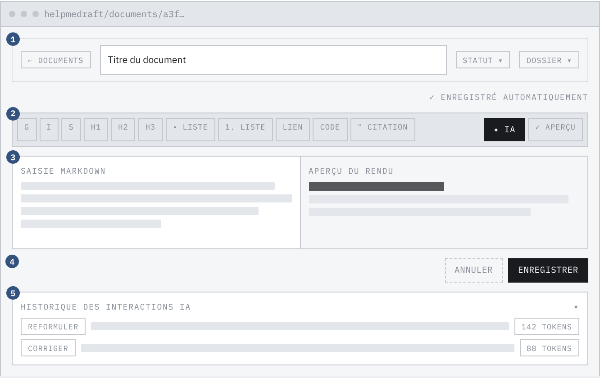
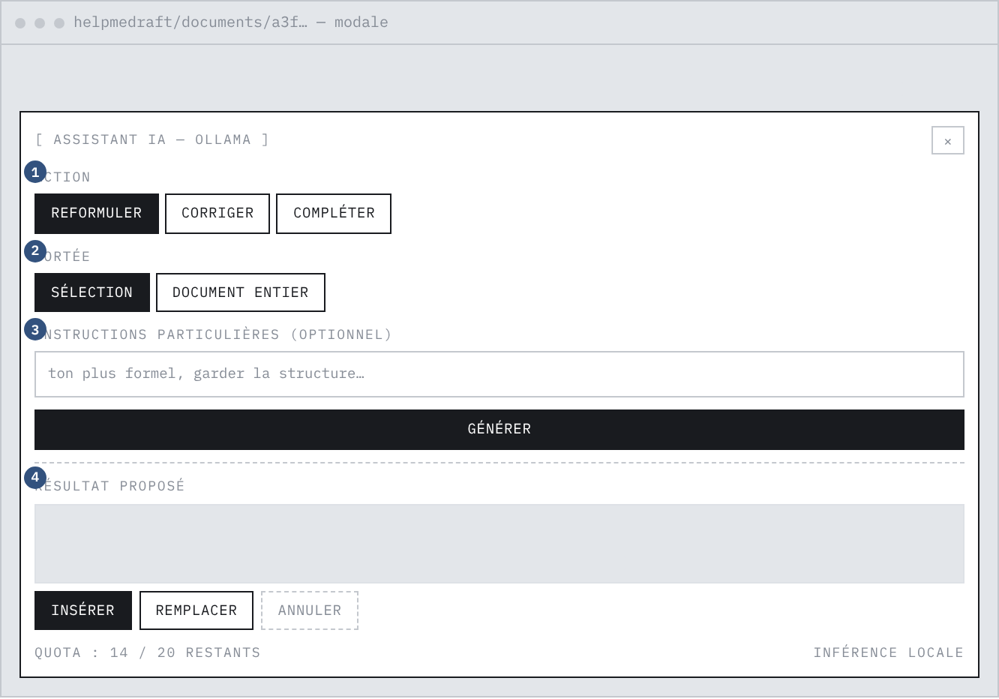
Les écrans se répartissent en quatre zones d'accès, matérialisées par des métadonnées de route et contrôlées par un garde de navigation. Le schéma ci-dessous formalise les transitions : trait plein pour une navigation déclenchée par l'utilisateur, trait pointillé pour une redirection automatique du garde.
| Zone | Condition | Écrans | Comportement du garde |
|---|---|---|---|
| Publique | aucune | accueil, fonctionnalités, tarifs, modèles, mentions légales, conditions d'utilisation, politique de confidentialité | accès libre |
| Invité | session absente | inscription, connexion, mot de passe oublié, nouveau mot de passe | un utilisateur déjà connecté est renvoyé au tableau de bord |
| Authentifiée | session valide | tableau de bord, mes documents, nouveau document, éditeur | sans session valide, redirection vers la connexion |
| Administration | session valide et rôle administrateur | back-office | sans le rôle requis, redirection vers le tableau de bord |
L'éditeur est le seul écran à porter plusieurs états concurrents. La suggestion y constitue un état distinct de l'édition : elle est présentée sans jamais écraser le texte de l'utilisateur, et son insertion est une action explicite. C'est la traduction directe de deux exigences du cahier des charges — « intégration des suggestions dans l'éditeur (insertion ou remplacement) » et « résultat affiché de manière différenciée ».
Le modèle de données est présenté en trois temps, selon la méthode Merise : le modèle conceptuel décrit ce que l'entreprise manipule, indépendamment de toute technique ; le modèle logique applique les règles de passage au relationnel ; le modèle physique fixe les types, les contraintes et les index du serveur de base de données retenu.
| Association | Entité | Cardinalité | Lecture |
|---|---|---|---|
| possède | Utilisateur | (0,n) | un utilisateur possède zéro à plusieurs dossiers |
| Dossier | (1,1) | un dossier appartient à un et un seul utilisateur | |
| rédige | Utilisateur | (0,n) | un utilisateur rédige zéro à plusieurs documents |
| Document | (1,1) | un document a un et un seul auteur | |
| classe | Dossier | (0,n) | un dossier classe zéro à plusieurs documents |
| Document | (0,1) | un document est classé dans au plus un dossier | |
| déclenche | Utilisateur | (0,n) | un utilisateur déclenche zéro à plusieurs interactions |
| Interaction | (1,1) | une interaction a un et un seul demandeur | |
| porte sur | Document | (0,n) | un document porte zéro à plusieurs interactions |
| Interaction | (1,1) | une interaction concerne un et un seul document | |
| donne | Utilisateur | (0,n) | un utilisateur donne zéro à plusieurs consentements |
| Consentement | (1,1) | un consentement émane d'un seul utilisateur | |
| ouvre | Utilisateur | (0,n) | un utilisateur ouvre zéro à plusieurs sessions, par exemple sur plusieurs appareils |
| Session | (1,1) | une session appartient à un seul utilisateur | |
| demande | Utilisateur | (0,n) | un utilisateur demande zéro à plusieurs réinitialisations |
| Réinitialisation | (1,1) | une demande émane d'un seul utilisateur |
L'interaction est rattachée à la fois à l'utilisateur et au document. L'auteur du document est pourtant déductible par transitivité. Cette dénormalisation est volontaire : le calcul du quota (RG-07) et les statistiques du back-office comptent les interactions par utilisateur, sans se soucier des documents. Sans rattachement direct, chaque vérification de quota — c'est-à-dire chaque demande d'assistance — imposerait une jointure sur le chemin le plus sollicité de l'application. Le coût est une cohérence à maintenir ; le gain est sur la fonctionnalité centrale.
Le classement d'un document est facultatif. La cardinalité (0,1) du côté du document traduit une règle d'usage : ranger est un confort, pas un préalable à la rédaction. Un utilisateur qui écrit vite ne doit pas être arrêté par une arborescence à créer.
Le consentement est une entité, et non un simple indicateur sur l'utilisateur. Le RGPD exige de pouvoir prouver le consentement : il faut en connaître le type, la date, et conserver l'historique des changements d'avis. Un indicateur écrasé à chaque modification ne constitue pas une preuve, puisqu'il ne garde aucune trace de son état antérieur.
Le passage du conceptuel au logique applique quatre règles :
Convention de lecture : la clé primaire est soulignée, la clé étrangère précédée d'un dièse.
UTILISATEUR (user_id, lastname, firstname, email, mdp_hash, role, quota_daily_limit, created_at, updated_at)
DOSSIER (id_dossier, name, created_at, #user_id)
DOCUMENT (id_document, titre, content, format, status, created_at, updated_at, #id_dossier, #user_id)
INTERACTION_IA (id_ia, type_action, content_before, content_after, tokens_used, created_at, #user_id, #id_document)
CONSENTEMENT (id_consentement, type_consentement, accepte, date_consentement, #user_id)
SESSION (id_session, refresh_token_hash, refresh_token_exp, revoke, created_at, #user_id)
REINITIALISATION (id, token_hash, expires_at, used, created_at, #user_id)
Les sept relations sont en troisième forme normale : tout attribut non clé dépend de la totalité de la clé primaire et d'elle seule. Le seul rattachement redondant — l'utilisateur porté par l'interaction en plus du document — est la dénormalisation assumée exposée plus haut.
| Objet | Convention | Exemple |
|---|---|---|
| Table | singulier, minuscules, séparées par soulignés | user_session |
| Clé primaire | id_<entité> | id_document |
| Clé étrangère | nom identique à la clé primaire référencée | document.user_id |
| Horodatages | created_at et updated_at | — |
| Identifiants | UUID version 4 stocké en CHAR(36) | — |
| Contraintes | préfixe par nature : fk_, uq_, ck_, ix_ | fk_document_user |
Un identifiant séquentiel exposé dans une adresse — /documents/42 — invite à
l'énumération : il suffit d'essayer 41, puis 43. Avec un identifiant universel, l'espace des
valeurs n'est pas devinable. La protection réelle reste le filtrage par propriétaire (RG-01),
mais l'identifiant universel retire l'incitation et supprime une fuite d'information
volumétrique : /documents/1337 révèle qu'au moins 1337 documents existent.
| Suppression | Effet | Justification |
|---|---|---|
| d'un utilisateur | suppression en cascade des six tables liées | droit à l'effacement : aucune donnée personnelle orpheline ne subsiste |
| d'un dossier | mise à nul du classement des documents | supprimer un rangement ne doit pas détruire le travail (RG-03) |
| d'un document | suppression en cascade de son historique d'interactions | un historique sans son document n'a plus de sens |
Les contraintes de domaine sont portées par le serveur de base de données et non seulement par l'application : le rôle est limité aux deux valeurs admises, le quota à un intervalle borné, le statut et le format d'un document à leurs listes respectives, et l'action d'assistance aux trois actions prévues. Une écriture qui violerait une règle de gestion est rejetée même si elle contourne l'application.
| Donnée | Sensibilité | Protection |
|---|---|---|
| Mot de passe | critique | empreinte bcrypt salée, jamais stocké en clair, jamais renvoyé |
| Jeton de rafraîchissement | critique | empreinte seule en base, renouvellement à chaque usage, détection de rejeu |
| Jeton de réinitialisation | critique | empreinte seule, expiration, usage unique |
| Contenu des documents | personnelle | cloisonnement par utilisateur, inférence locale : aucune sortie vers un tiers |
| Historique des interactions | personnelle | cloisonnement par utilisateur |
| Identité et adresse électronique | personnelle | unicité de l'adresse, suppression en cascade à la fermeture du compte |
| Consentement | preuve légale | tracé, horodaté et conservé |
L'accès au serveur de base de données applique le moindre privilège. Le compte utilisé par l'application ne dispose que des droits de lecture et d'écriture sur les données ; les droits de création et de modification du schéma sont portés par un compte distinct, réservé aux migrations. Un défaut applicatif ne peut donc pas détruire une table.
Le schéma est décrit par un script SQL unique, qui fait foi. L'ordre de création est imposé par les dépendances de clés étrangères : l'utilisateur d'abord, puis le dossier, le document et l'historique des interactions, les trois tables satellites venant après l'utilisateur. Le script porte les contraintes d'intégrité et les contraintes de domaine : les règles de gestion sont ainsi appliquées par le serveur de base de données, et pas seulement par l'application.
-- Cible : MySQL 8.0 / InnoDB / utf8mb4 CREATE DATABASE IF NOT EXISTS helpmedraft CHARACTER SET utf8mb4 COLLATE utf8mb4_0900_ai_ci; USE helpmedraft; -- `user` est entouré d'accents graves : c'est un mot réservé de MySQL. CREATE TABLE `user` ( user_id CHAR(36) NOT NULL, lastname VARCHAR(50) NOT NULL, firstname VARCHAR(50) NOT NULL, email VARCHAR(326) NOT NULL, -- longueur maximale RFC 5321 mdp_hash VARCHAR(255) NOT NULL, -- empreinte bcrypt role VARCHAR(20) NOT NULL DEFAULT 'user', quota_daily_limit INT NOT NULL DEFAULT 20, created_at DATETIME NOT NULL, updated_at DATETIME NOT NULL, PRIMARY KEY (user_id), UNIQUE KEY uq_user_email (email), CONSTRAINT ck_user_role CHECK (role IN ('user','admin')), -- Borne basse à 1 et non à 0 : un quota nul serait un compte bridé sans -- que rien ne le dise. Couper l'accès relève d'un champ explicite. CONSTRAINT ck_user_quota CHECK (quota_daily_limit BETWEEN 1 AND 1000) ) ENGINE=InnoDB;
CREATE TABLE document (
id_document CHAR(36) NOT NULL,
titre VARCHAR(255) NOT NULL,
content TEXT NULL,
format VARCHAR(20) NOT NULL DEFAULT 'markdown',
status VARCHAR(20) NOT NULL DEFAULT 'brouillon',
created_at DATETIME NOT NULL,
updated_at DATETIME NOT NULL,
id_dossier CHAR(36) NULL,
user_id CHAR(36) NOT NULL,
PRIMARY KEY (id_document),
KEY ix_document_user_updated (user_id, updated_at), -- liste triée par utilisateur
KEY ix_document_dossier (id_dossier), -- filtrage par dossier
CONSTRAINT fk_document_user FOREIGN KEY (user_id)
REFERENCES `user` (user_id) ON DELETE CASCADE,
-- SET NULL et non CASCADE : supprimer un classement ne détruit pas le travail.
CONSTRAINT fk_document_dossier FOREIGN KEY (id_dossier)
REFERENCES dossier (id_dossier) ON DELETE SET NULL,
CONSTRAINT ck_document_status CHECK (status IN ('brouillon','a_relire','termine')),
CONSTRAINT ck_document_format CHECK (format IN ('markdown','wysiwyg'))
) ENGINE=InnoDB;
CREATE TABLE ia (
id_ia CHAR(36) NOT NULL,
type_action VARCHAR(50) NOT NULL,
content_before TEXT NULL,
content_after TEXT NULL,
tokens_used INT NOT NULL DEFAULT 0,
created_at DATETIME NOT NULL,
user_id CHAR(36) NOT NULL,
id_document CHAR(36) NOT NULL,
PRIMARY KEY (id_ia),
KEY ix_ia_user_created (user_id, created_at), -- quota 24 h
KEY ix_ia_document_created (id_document, created_at), -- historique du document
CONSTRAINT fk_ia_user FOREIGN KEY (user_id)
REFERENCES `user` (user_id) ON DELETE CASCADE,
CONSTRAINT fk_ia_document FOREIGN KEY (id_document)
REFERENCES document (id_document) ON DELETE CASCADE,
CONSTRAINT ck_ia_action CHECK (type_action IN ('reformuler','corriger','completer'))
) ENGINE=InnoDB;
L'index composé sur l'historique, par utilisateur et par date, sert exactement la requête du quota : compter les interactions d'un compte depuis vingt-quatre heures. Cette requête est exécutée à chaque demande d'assistance — c'est le chemin le plus sollicité de l'application. Le second index, par document et par date, sert la relecture de l'historique d'un document en ordre antichronologique.
Toute évolution du schéma passe par un script de migration daté, versionné à côté du script de création, et applicable sur une base existante sans perte de données. Le script de création reste la référence : il décrit l'état cible du schéma, les migrations décrivent le chemin pour y arriver.
USE helpmedraft; -- La contrainte applicative imposait un quota minimal de 1, la contrainte SQL -- acceptait 0 : deux sources de vérité divergentes. La base est alignée sur la -- règle de gestion, après correction des éventuelles lignes non conformes. UPDATE `user` SET quota_daily_limit = 1 WHERE quota_daily_limit < 1; ALTER TABLE `user` DROP CHECK ck_user_quota; ALTER TABLE `user` ADD CONSTRAINT ck_user_quota CHECK (quota_daily_limit BETWEEN 1 AND 1000);
Un test automatisé compare en continu le schéma déclaré par le script SQL et les modèles de la couche d'accès aux données. Il échoue dès qu'une colonne, un type ou une contrainte diverge entre les deux : la divergence est détectée au moment où elle est introduite, et non en production.
Un jeu d'essai scripté peuple une base de test avec des comptes, des dossiers, des documents et un historique d'interactions couvrant les cas limites : document non classé, dossier vide, utilisateur au quota consommé, interaction datée de plus de vingt-quatre heures. Il est rejouable : il vide les tables concernées avant de les remplir, de sorte que deux exécutions successives produisent le même état. La procédure de sauvegarde produit une archive compressée du schéma et des données, et la procédure de restauration est testée périodiquement — une sauvegarde dont la restauration n'a jamais été vérifiée n'est pas une sauvegarde.
Les dix-huit cas d'utilisation sont regroupés par acteur. L'administrateur hérite de tous les cas de l'utilisateur authentifié, et y ajoute les siens. Deux cas — la vérification du quota et l'authentification — ne sont jamais déclenchés directement par un acteur : ils sont inclus par les cas qui en dépendent.
| Acteur principal | Utilisateur authentifié |
|---|---|
| Acteur secondaire | Service d'inférence |
| Préconditions | l'utilisateur est authentifié, le document lui appartient, son quota glissant n'est pas atteint |
| Postconditions | une interaction horodatée trace l'appel ; la suggestion est renvoyée sans être écrite dans le document |
Scénario nominal
Scénarios alternatifs
| Réf. | Condition | Réponse du système |
|---|---|---|
| A1 | action ou portée hors liste blanche | requête rejetée, aucune trace écrite |
| A2 | contenu vide, ou au-delà de la borne admise | requête rejetée, aucune trace écrite |
| A3 | document inexistant ou appartenant à un autre utilisateur | réponse « introuvable », identique dans les deux cas |
| A4 | quota atteint | refus explicite indiquant la limite du compte |
| A5 | service d'inférence injoignable | erreur de passerelle, message explicite, aucune interaction enregistrée |
Le scénario A3 répond « introuvable » et non « interdit ». Répondre « interdit » confirmerait à un attaquant que l'identifiant de document existe : c'est une fuite d'information par énumération. La requête filtre toujours conjointement sur l'identifiant du document et celui de son propriétaire, jamais sur l'identifiant seul.
Le scénario A5 n'enregistre aucune interaction, donc ne consomme pas de quota. Sans cette propriété, une panne du service d'inférence épuiserait le quota de l'utilisateur sans lui rendre le moindre service.
| Règle appliquée | RG-07 |
|---|---|
| Mécanisme | fenêtre glissante de vingt-quatre heures, et non remise à zéro à minuit |
| Calcul | nombre d'interactions du compte depuis vingt-quatre heures, comparé à la limite propre au compte |
| Dépassement | la demande est refusée et le message indique la limite |
Une fenêtre glissante évite l'effet de bord d'une remise à zéro à minuit, où un utilisateur consommerait quarante requêtes en deux heures à cheval sur le changement de jour.
| Acteur principal | Administrateur |
|---|---|
| Préconditions | l'acteur est authentifié et porte le rôle administrateur |
Scénario nominal. L'administrateur ouvre le back-office ; le système vérifie son rôle côté serveur, avant tout traitement de la requête ; il liste les comptes avec, pour chacun, son nombre de documents et d'interactions ; il peut modifier un rôle ou un quota, ou supprimer un compte.
Scénario alternatif. Si l'acteur n'est pas administrateur, l'accès est refusé. Le garde de navigation du client n'est qu'un confort d'interface : l'autorisation réelle est rendue par le serveur.
| Cas d'utilisation | Besoins couverts | Écran | Point d'entrée |
|---|---|---|---|
| UC-01 S'inscrire | BF-01 | /register | POST /auth/register |
| UC-02 Se connecter | BF-02 | /login | POST /auth/login |
| UC-03 Se déconnecter | BF-02 | barre de navigation | POST /auth/logout |
| UC-04 Réinitialiser son mot de passe | BF-03 | /forgot-password, /reset-password | POST /auth/forgot-password, POST /auth/reset-password |
| UC-05 Créer un document | BF-10 | /documents/nouveau | POST /documents |
| UC-06 Rédiger un document | BF-05 | /documents/:id | PUT /documents/:id |
| UC-07 Consulter ses documents | BF-10 | /documents | GET /documents |
| UC-08 Enregistrer automatiquement | BF-11 | /documents/:id | PUT /documents/:id |
| UC-09 Supprimer un document | BF-10 | /documents | DELETE /documents/:id |
| UC-10 Demander une suggestion | BF-06 à BF-08, BF-14, BF-15 | /documents/:id | POST /documents/:id/ia/generer |
| UC-11 Appliquer une suggestion | BF-09, BF-16 | /documents/:id | traitement côté client |
| UC-12 Consulter l'historique | BF-12 | /documents/:id | GET /documents/:id/ia/historique |
| UC-13 Organiser en dossiers | BF-13 | /documents | GET, POST, DELETE /dossiers |
| UC-14 Pages vitrine et légales | — | pages publiques | — |
| UC-15 Gérer les comptes | BF-04, BF-17 | /admin | GET, PATCH, DELETE /admin/users |
| UC-16 Consulter les statistiques | BF-18 | /admin | GET /admin/stats |
| UC-17 Vérifier le quota | BF-19 | — | inclus par la demande de suggestion |
| UC-18 S'authentifier | BNF-01 | — | contrôle du jeton, POST /auth/refresh |
Deux cas sont détaillés : la demande de suggestion, parce qu'elle traverse les quatre couches de l'architecture et porte l'essentiel des règles de gestion ; la connexion suivie du renouvellement de session, parce qu'elle porte l'essentiel de la stratégie d'authentification.
L'ordre des contrôles n'est pas indifférent. L'authentification précède la validation, qui précède la vérification de propriété, qui précède la vérification du quota, qui précède l'appel au modèle. Chaque contrôle est placé avant l'opération la plus coûteuse qu'il permet d'éviter : vérifier le quota après avoir généré la suggestion la ferait payer sans la servir, et vérifier la propriété après la génération ferait travailler le modèle sur un document qui n'appartient pas au demandeur.
L'appel au service d'inférence n'est pas interrompu par un délai de lecture. Sur une machine dépourvue d'accélérateur graphique, la reformulation de quelques milliers de caractères peut dépasser la minute ; interrompre l'appel afficherait une erreur alors que la génération aboutit. Ce qui plafonne le coût d'un appel est la borne sur la taille d'entrée, et non un chronomètre. Le délai de connexion, lui, reste court : un service non démarré doit échouer immédiatement, et non après une minute d'attente.
Deux jetons sont émis, et la raison tient en une phrase : ils n'ont pas la même durée de vie parce qu'ils n'ont pas la même exposition.
| Jeton d'accès | Jeton de rafraîchissement | |
|---|---|---|
| Durée de vie | 15 minutes | 7 jours |
| Emplacement | mémoire de l'application cliente | témoin de connexion inaccessible au script |
| Transmis à | chaque requête protégée | la seule route de renouvellement |
| En base | rien — il est vérifié par sa signature | son empreinte seule |
| Exposition | élevée : lisible par le script de la page | faible : jamais lu par le script |
| Conséquence d'un vol | bornée à quinze minutes | détectée au premier rejeu, qui invalide toutes les sessions du compte |
La rotation est le point central : chaque renouvellement révoque l'ancien jeton et en émet un nouveau. Si un attaquant dérobe un jeton et s'en sert après l'utilisateur légitime, le système constate qu'un jeton déjà révoqué est présenté. Cette présentation ne peut avoir qu'une explication : deux porteurs détiennent le même secret. Le système révoque alors toutes les sessions du compte, ce qui déconnecte l'attaquant comme l'utilisateur, lequel n'a qu'à se reconnecter.
| Couche | Composant | Rôle |
|---|---|---|
| Front-end | Vue 3 | application monopage à composants, interface de composition |
| Vue Router | routage, métadonnées de zone d'accès, garde de navigation, chargement différé | |
| Pinia | magasin de session : identité, rôle, jeton d'accès en mémoire | |
| Tailwind CSS | feuille de style utilitaire, charte graphique, points de rupture | |
| CodeMirror, Marked, DOMPurify | saisie Markdown, conversion en HTML, assainissement avant affichage | |
| Back-end | Python 3 et Flask | interface de programmation REST, cinq plans d'URL |
| SQLAlchemy 2.0 | couche d'accès aux données, sept modèles, requêtes paramétrées | |
| bcrypt et PyJWT | empreintes de mots de passe, signature et vérification des jetons d'accès | |
| Flask-Limiter | limitation de débit sur les routes d'authentification | |
| Flask-Mail | envoi du courriel de réinitialisation | |
| Services | MySQL 8.4 | base relationnelle, moteur transactionnel, contraintes d'intégrité |
| Ollama | exécution locale du modèle de langage | |
| relais SMTP | acheminement du courriel de réinitialisation | |
| Exploitation | Docker Compose | pile reproductible : base, serveur applicatif, serveur web |
| GitHub Actions | intégration continue : analyse statique, tests, construction des images | |
| Gunicorn | serveur d'application en production, à la place du serveur de développement |
Le modèle retenu est un modèle de petite taille, et le critère de choix n'est pas sa taille mais l'absence de mode raisonnement. Sur une machine sans accélérateur graphique, la durée d'une génération dépend surtout du nombre de jetons produits. Un modèle qui déroule un raisonnement avant de répondre en produit plusieurs centaines qui ne seront jamais affichés : pour corriger une faute d'accord dans une phrase de huit mots, la réponse utile représente alors une fraction du travail facturé en temps de calcul. C'est aussi le levier d'éco-conception ECO-06.
L'interface est REST et sans état : aucune session serveur n'est conservée en mémoire, l'identité est portée par le jeton présenté à chaque requête. Les échanges se font en JSON, les codes de statut HTTP portent le sens de la réponse, et toutes les routes protégées exigent un jeton valide.
| Verbe | Chemin | Accès | Objet |
|---|---|---|---|
Authentification — /auth | |||
| POST | /auth/register | public | créer un compte et tracer le consentement |
| POST | /auth/login | public | ouvrir une session, émettre les deux jetons |
| POST | /auth/refresh | témoin | renouveler le jeton d'accès et faire tourner le jeton de rafraîchissement |
| POST | /auth/logout | authentifié | révoquer la session et effacer le témoin |
| GET | /auth/me | authentifié | restituer l'identité et le rôle du porteur du jeton |
| POST | /auth/forgot-password | public | émettre un jeton de réinitialisation et l'envoyer par courriel |
| POST | /auth/reset-password | public | consommer le jeton et fixer le nouveau mot de passe |
| Documents et dossiers | |||
| GET | /documents | authentifié | lister les documents du porteur, et eux seuls |
| POST | /documents | authentifié | créer un document |
| GET | /documents/<id> | authentifié | lire un document possédé |
| PUT | /documents/<id> | authentifié | enregistrer un document possédé |
| DELETE | /documents/<id> | authentifié | supprimer un document possédé |
| GET | /documents/stats | authentifié | compteurs du tableau de bord du porteur |
| GET | /dossiers | authentifié | lister les dossiers du porteur |
| POST | /dossiers | authentifié | créer un dossier |
| DELETE | /dossiers/<id> | authentifié | supprimer un dossier, sans supprimer ses documents |
| Assistance à la rédaction | |||
| POST | /documents/<id>/ia/generer | authentifié | demander une suggestion : valider, contrôler le quota, appeler le modèle, tracer |
| GET | /documents/<id>/ia/historique | authentifié | relire l'historique des interactions d'un document possédé |
Back-office — /admin | |||
| GET | /admin/users | administrateur | lister les comptes avec leurs compteurs d'usage |
| PATCH | /admin/users/<id> | administrateur | modifier le rôle ou le quota d'un compte |
| DELETE | /admin/users/<id> | administrateur | supprimer un compte et toutes ses données |
| GET | /admin/stats | administrateur | statistiques d'usage globales |
| Code | Signification | Emploi dans l'application |
|---|---|---|
| 200 | succès | lecture, mise à jour, renouvellement de session |
| 201 | ressource créée | inscription, création de document ou de dossier, suggestion produite |
| 204 | succès sans contenu | suppression |
| 400 | requête invalide | champ manquant, valeur hors liste blanche, contenu trop long |
| 401 | non authentifié | jeton absent, expiré ou invalide ; identifiants incorrects |
| 403 | non autorisé | accès au back-office sans le rôle administrateur |
| 404 | ressource introuvable | ressource inexistante ou appartenant à un autre utilisateur |
| 429 | trop de requêtes | limitation de débit atteinte, ou quota d'assistance consommé |
| 502 | service en amont indisponible | service d'inférence injoignable |
| Point | Spécification |
|---|---|
| Mot de passe | huit caractères au minimum, au moins une majuscule, une minuscule et un chiffre ; vérifié côté serveur |
| Stockage | empreinte bcrypt avec sel aléatoire propre à chaque mot de passe ; deux comptes de même mot de passe ont deux empreintes différentes |
| Jeton d'accès | JWT signé en HS256, durée de quinze minutes, porté par l'en-tête d'autorisation |
| Jeton de rafraîchissement | 64 octets aléatoires, durée de sept jours, transmis dans un témoin HttpOnly, SameSite=Strict, restreint au chemin /auth, et marqué Secure hors développement |
| Rotation | renouvellement à chaque usage ; la présentation d'un jeton déjà consommé révoque toutes les sessions du compte |
| Réinitialisation | jeton aléatoire à usage unique, expirant, dont seule l'empreinte est conservée |
| Entrée | Règle de validation |
|---|---|
| Action d'assistance | liste blanche fermée : compléter, reformuler, corriger |
| Portée | liste blanche fermée : sélection ou document entier |
| Contenu soumis | chaîne non vide, bornée par une valeur de configuration dimensionnée sur le débit de la machine |
| Consigne particulière | chaîne, 500 caractères au plus |
| Statut et format d'un document | listes blanches fermées, doublées d'une contrainte de domaine en base |
| Rôle et quota | liste blanche pour le rôle, intervalle borné pour le quota, doublés en base |
| Recherche dans le back-office | longueur bornée, caractères génériques neutralisés pour que la recherche porte sur le texte saisi |
| Route | Limite | Menace visée |
|---|---|---|
/auth/register | 3 par heure | création massive de comptes |
/auth/login | 5 par minute | bourrage d'identifiants et attaque par dictionnaire |
/auth/refresh | 30 par minute | sollicitation abusive du renouvellement de session |
/auth/forgot-password | 3 par heure | envoi massif de courriels à une adresse tierce |
/auth/reset-password | 5 par heure | recherche exhaustive d'un jeton de réinitialisation |
Aucun secret ne figure dans le code source. Les clés, identifiants et adresses de service sont lus dans l'environnement, et un fichier d'exemple commenté décrit chaque variable attendue. Deux clés distinctes sont exigées — l'une pour la signature des jetons, l'autre pour la session du cadriciel — parce que réutiliser une même clé pour deux usages cryptographiques différents fait qu'une fuite sur l'un compromet l'autre. L'application refuse de démarrer si l'une de ces clés est absente : il n'existe aucune valeur de repli.
class Config: # SÉCURITÉ : aucune valeur de repli. Une clé de secours inscrite dans le code # permettrait de démarrer sans configuration, avec une clé connue de quiconque # lit le dépôt : n'importe qui pourrait alors forger un jeton valide pour # n'importe quel compte. On préfère un échec bruyant au démarrage à un # démarrage silencieusement vulnérable. JWT_SECRET_KEY = os.environ.get("JWT_SECRET_KEY") if not JWT_SECRET_KEY: raise RuntimeError( "JWT_SECRET_KEY est absente de l'environnement." ) # Clé de session, DISTINCTE de la précédente : réutiliser une même clé pour # deux usages cryptographiques fait qu'une fuite sur l'un compromet l'autre. SECRET_KEY = os.environ.get("SECRET_KEY") if not SECRET_KEY: raise RuntimeError("SECRET_KEY est absente de l'environnement.") # L'attribut Secure du témoin de connexion dépend de l'environnement : en # développement le client est servi en HTTP, un témoin Secure ne serait jamais # envoyé ; hors développement il est obligatoire, sinon le jeton peut # transiter en clair et être capté. APP_ENV = os.getenv("APP_ENV", "development") COOKIE_SECURE = APP_ENV != "development" # Origines autorisées à appeler l'interface depuis un navigateur. Lues dans # l'environnement : en conteneur, le client n'est pas servi sur le même port # qu'en développement, et une valeur inscrite dans le code faisait refuser # toutes les requêtes sans qu'aucune erreur serveur ne l'explique. CORS_ORIGINS = [o.strip() for o in os.getenv("CORS_ORIGINS", "http://localhost:5173").split(",") if o.strip()]
| Développement | Tests | Cible | |
|---|---|---|---|
| Base | fichier local | base en mémoire, recréée à chaque test | MySQL 8.4 en conteneur |
| Inférence | service local | double de test, aucun appel réseau | service local sur l'hôte |
| Messagerie | relais de test | envoi supprimé, messages capturés | relais de production |
| Limitation de débit | active | désactivée | active |
| Secrets | fichier d'environnement local | valeurs fixes injectées par les fixtures | secrets d'environnement |
| Serveur | serveur de développement | client de test du cadriciel | Gunicorn derrière un serveur web |
La pile de production est décrite par un fichier de composition de conteneurs : un conteneur pour la base, un pour le serveur applicatif, un pour le serveur web qui sert les fichiers statiques du client. Le service d'inférence reste sur l'hôte, pour accéder au matériel. Les dépendances sont figées par des fichiers de verrouillage accompagnés des empreintes de chaque archive : une archive altérée sur l'index fait échouer l'installation au lieu d'être installée silencieusement.
Le serveur de développement du client ne doit jamais être exposé sur le réseau, et son port ne doit pas être publié dans la configuration des conteneurs. Des campagnes d'analyse automatisée recherchent précisément ces serveurs pour y lire le fichier d'environnement — qui contient ici les clés de signature et les identifiants du relais de messagerie.
Le référentiel retenu est le RGAA 4.1.2, fondé sur les règles WCAG 2.1 de niveau AA. Les exigences portent sur quatre points, conformément au cahier des charges.
| Exigence | Mise en œuvre |
|---|---|
| Contraste | rapport de contraste conforme au niveau AA sur l'ensemble des textes et des composants d'interface |
| Navigation au clavier | ordre de tabulation conforme à l'ordre de lecture, indicateur de focus visible sur tout élément focalisable, lien d'évitement en premier élément de chaque page |
| Balises ARIA et sémantique | un repère principal et un titre de niveau un par page, hiérarchie de titres sans saut de niveau, nom accessible sur chaque champ, y compris la zone d'édition |
| Titres de page | un titre distinct par écran, posé par le routeur et non par chaque vue, pour qu'un oubli soit impossible |
| Taille des cibles | cibles tactiles conformes au seuil recommandé, par ajustement de l'espacement et non de la taille du texte |
| Contrôle | audit instrumenté sur l'application réellement démarrée, rejoué après correction |
| Exigence | Réponse |
|---|---|
| Consentement explicite à l'usage de l'assistance | consentement recueilli à l'inscription, enregistré dans une table dédiée avec son type et sa date ; l'historique des changements d'avis est conservé, ce qui constitue la preuve exigée |
| Aucune donnée personnelle transmise sans anonymisation | l'inférence est exécutée localement : le contenu des documents ne quitte jamais l'infrastructure. L'exigence est satisfaite par construction, et non par un traitement d'anonymisation dont il faudrait démontrer l'efficacité |
| Droit à l'effacement | la suppression d'un compte entraîne, par contrainte de base de données, celle de ses dossiers, documents, interactions, consentements, sessions et demandes de réinitialisation |
| Minimisation | un seul tiers reçoit une donnée personnelle : le relais de messagerie, et uniquement l'adresse électronique, uniquement lors d'une réinitialisation de mot de passe |
| Information des personnes | mentions légales, conditions générales d'utilisation et politique de confidentialité accessibles depuis toutes les pages |
Les extraits retenus dans cette partie suivent la fonctionnalité la plus représentative du projet — la demande de suggestion sur un document — depuis l'interface jusqu'à la base de données, en passant par le contrôleur et les composants métier. Chaque extrait est suivi des arguments qui ont commandé le choix retenu. Les extraits complets figurent en annexe.
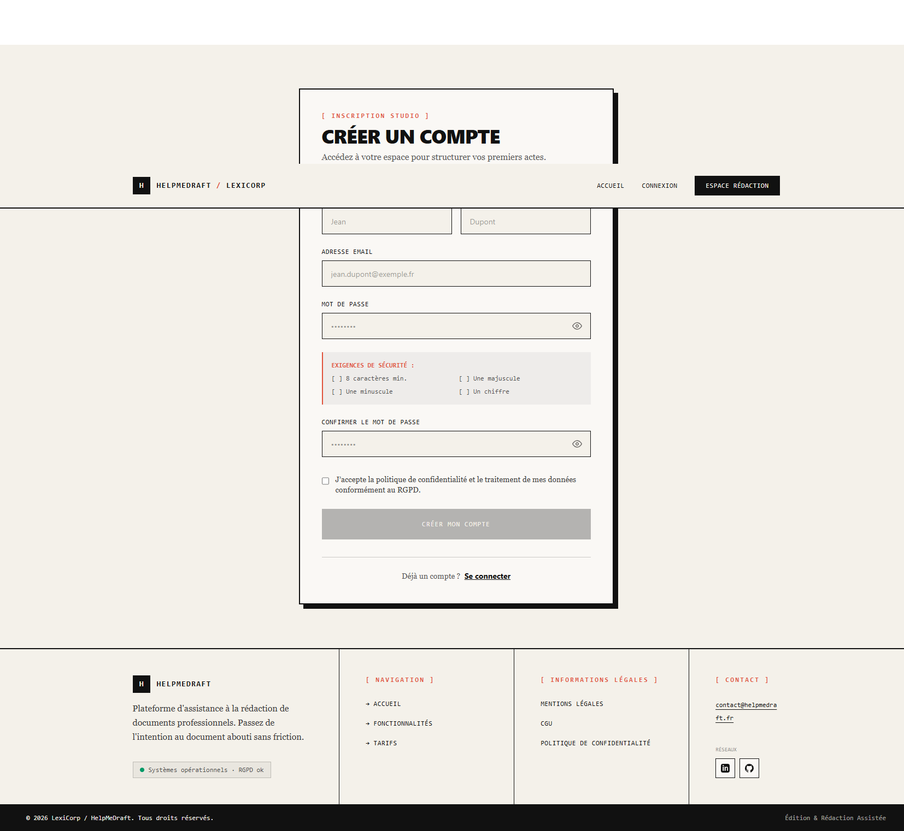
<!-- Consentement RGPD : case à cocher obligatoire, distincte du bouton. -->
<label class="flex items-start gap-3 cursor-pointer pt-2">
<input
v-model="rgpdConsent"
type="checkbox"
required
class="mt-0.5 h-6 w-6 shrink-0 ..."
/>
<span class="font-serif text-sm ...">
J'accepte la politique de confidentialité et le traitement de mes
données conformément au RGPD.
</span>
</label>
@auth_bp.route("/register", methods=["POST"]) @limiter.limit("3 per hour") def register(): data = request.get_json() for field in ["email", "mdp", "lastname", "firstname", "rgpd_consent"]: if not data.get(field): return jsonify({"error": f"Le champ {field} est requis"}), 400 # Le consentement est revérifié côté serveur : la case cochée dans le # navigateur n'est qu'une information transmise, elle ne prouve rien. if data.get("rgpd_consent") is not True: return jsonify({"error": "Le consentement RGPD est requis"}), 400 if not is_password_valid(plain_password): return jsonify({"error": "Le mot de passe doit contenir au moins 8 caractères, " "une majuscule, une minuscule et un chiffre"}), 400 with SessionLocal() as db_session: new_user = User( email=email, mdp_hash=hash_password(plain_password), # jamais le mot de passe en clair lastname=data["lastname"], firstname=data["firstname"], role="user", # le rôle ne vient jamais du client ) db_session.add(new_user) db_session.flush() # génère l'identifiant sans valider la transaction # Le consentement est tracé dans la MÊME transaction que la création du # compte : il ne peut pas exister de compte sans sa preuve de consentement. db_session.add(Consentement(type_consentement="rgpd", accepte=True, user_id=new_user.user_id)) db_session.commit()
Le rôle n'est jamais lu dans la requête. Il est fixé à « utilisateur » par le serveur. Accepter un rôle transmis par le client permettrait à quiconque de s'inscrire administrateur.
Le consentement est écrit dans la même transaction que le compte. En deux transactions, une panne entre les deux produirait un compte sans preuve de consentement — exactement la situation que le RGPD interdit de ne pas pouvoir documenter.
La politique de mot de passe est appliquée côté serveur. La validation du formulaire sert l'ergonomie ; elle ne protège rien, puisqu'une requête peut être envoyée sans passer par le formulaire.
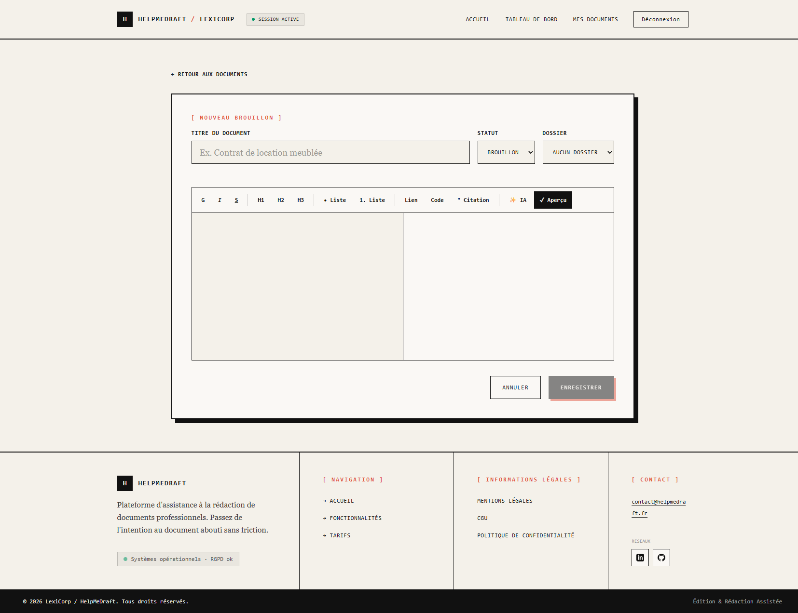
// SÉCURITÉ — injection de script stockée. // La bibliothèque de conversion transforme le Markdown en HTML mais ne filtre // PAS le HTML brut qu'elle rencontre : un document contenant // <img src=x onerror="..."> produit cette balise telle quelle, et l'insertion // dans la page exécute le gestionnaire. Comme l'éditeur enregistre // automatiquement, la charge est PERSISTÉE en base et rejouée à chaque // ouverture du document — injection stockée, et non simplement réfléchie. // L'assainissement supprime balises et attributs dangereux après la // conversion et avant l'insertion. const previewHtml = computed(() => { try { const rawHtml = marked.parse(internalValue.value || "", markedOptions) as string; return DOMPurify.sanitize(rawHtml, { USE_PROFILES: { html: true } }); } catch { return "<p>Erreur de rendu</p>"; } });
/** * Applique la proposition au document. * * Deux modes, exigés par le cahier des charges : le résultat doit pouvoir être * inséré OU venir remplacer le texte d'origine. Dans les deux cas, c'est * l'utilisateur qui décide : la génération seule ne touche jamais au document. * * Le repérage se fait par recherche de chaîne dans le Markdown, et non par les * décalages de la sélection du navigateur : startOffset compte les caractères * DANS LE NŒUD sélectionné, pas depuis le début du document. Utilisé tel quel, * il désignait une position arbitraire et tronquait le texte ailleurs. */ function appliquerProposition(mode: "inserer" | "remplacer") { const proposition = iaResult.value; if (!proposition) return null; // iaSourceText est FIGÉ au moment de la génération, et non relu ici : la // sélection a pu changer pendant l'attente, et appliquer la proposition à un // autre passage que celui soumis serait un résultat silencieusement faux. const source = iaSourceText.value; const debut = source ? content.value.indexOf(source) : -1; if (!source || debut === -1) { // Le passage ne correspond plus à rien : on n'écrase rien, on ajoute en // fin de document, et on le DIT plutôt que de laisser croire au // remplacement demandé. content.value = `${content.value}\n\n${proposition}`; return { position: content.value.length, avertissement: "Le passage d'origine n'a pas été retrouvé…" }; } const avant = content.value.slice(0, debut); const apres = content.value.slice(debut + source.length); content.value = mode === "remplacer" ? avant + proposition + apres : `${avant}${source}\n\n${proposition}${apres}`; return { position: mode === "remplacer" ? debut : debut + source.length + 2 }; }
La première version repérait le passage à remplacer par les décalages de la sélection du navigateur. Ces décalages comptent les caractères dans le nœud du document affiché, et non depuis le début du texte source : le remplacement s'appliquait à un endroit arbitraire, et tronquait le document. Le correctif consiste à retrouver le passage dans la chaîne Markdown, et à refuser d'écrire au hasard quand il n'y est plus — la proposition est alors ajoutée en fin, avec un avertissement. Un résultat faux annoncé comme exact est plus grave qu'un résultat approché annoncé comme tel.
Le cahier des charges exige un « prompt engineering dynamique ». Il est réalisé par un gabarit par action, paramétré par le contenu et par la consigne facultative de l'utilisateur.
PROMPT_TEMPLATES = {
"reformuler": (
"Tu es un assistant de rédaction de documents professionnels. "
"Reformule le texte suivant pour le rendre plus clair et plus professionnel, "
"sans changer son sens ni ajouter d'informations nouvelles. "
"Réponds uniquement avec le texte reformulé, sans commentaire ni introduction.\n\n"
"Texte à reformuler :\n{contenu}"
),
"corriger": ("Tu es un correcteur professionnel. Corrige les fautes d'orthographe, "
"de grammaire et de syntaxe du texte suivant, sans changer son sens "
"ni son style. …"),
"completer": ("Complète le texte suivant de façon cohérente avec ce qui précède, "
"en respectant le ton et le sujet. …"),
}
# Une température PAR ACTION, et non une valeur unique.
# Corriger l'orthographe demande au modèle de ne RIEN changer d'autre : une
# température élevée l'incite à reformuler au passage, c'est-à-dire exactement
# ce qu'on lui a interdit. Compléter, à l'inverse, est une tâche de rédaction
# où un peu de variété est souhaitable. Une valeur unique servait bien la
# dernière et desservait la première.
TEMPERATURES = {"corriger": 0.1, "reformuler": 0.3, "completer": 0.7}
def build_prompt(type_action: str, contenu: str, instructions: str | None = None) -> str:
template = PROMPT_TEMPLATES.get(type_action)
if template is None:
# Liste blanche fermée : une action inconnue ne produit pas un prompt
# dégradé, elle échoue.
raise ValueError(f"Type d'action inconnu: {type_action}")
prompt = template.format(contenu=contenu)
if instructions:
prompt += f"\n\nConsigne particulière à respecter: {instructions}"
return prompt
def _appel(base_url: str, charge: dict, connect_timeout: int) -> tuple[str, int]: """Un aller-retour avec le service, erreurs réseau traduites en RuntimeError.""" try: with requests.post( f"{base_url}/api/generate", json=charge, stream=True, # Couple (connexion, lecture). La lecture est volontairement SANS # limite : sur processeur seul, une reformulation de quelques milliers # de caractères dépasse la minute, et l'interrompre affichait une # erreur alors que la génération aboutissait. La connexion, elle, # garde un délai court pour qu'un service non lancé échoue tout de suite. timeout=(connect_timeout, None), ) as response: try: response.raise_for_status() except requests.exceptions.HTTPError as e: # Le corps est lu ICI, avant de quitter le bloc. Avec un flux, sortir # du bloc libère la connexion et le corps devient illisible : le # diagnostic du service était alors perdu au profit d'un « 400 Client # Error » sans information. raise RuntimeError(_erreur_http(e, charge["model"], _detail_ollama(response))) return _lire_flux(response) except requests.exceptions.ConnectionError as e: # Le délai de connexion dépassé veut dire la même chose qu'un refus : # le service n'est pas joignable à cette adresse. raise RuntimeError( f"Impossible de joindre le service d'inférence sur {base_url}. " "Vérifiez qu'il est lancé sur votre machine." ) from e
Un chronomètre sur la lecture paraît une protection évidente contre un service bloqué. En pratique il coupait des générations qui aboutissaient, et affichait une erreur à l'utilisateur alors que son texte était prêt. Ce qui plafonne réellement le coût d'un appel est la borne sur la taille d'entrée : reformuler produit à peu près autant de texte qu'il en reçoit, donc borner l'entrée borne la sortie. Le délai de connexion reste court, car il répond à une autre question : le service est-il là ?
def rotate_refresh_token(old_refresh_token: str) -> tuple[str, str]: """ Vérifie le jeton présenté, applique la rotation, et détecte une éventuelle réutilisation frauduleuse. """ old_token_hash = hash_refresh_token(old_refresh_token) with SessionLocal() as db_session: session = db_session.execute( select(UserSession).where(UserSession.refresh_token_hash == old_token_hash) ).scalar_one_or_none() if session is None: raise ValueError("Refresh token invalide") # Le jeton existe MAIS il a déjà servi. Un jeton tourné n'est jamais # présenté deux fois par un client légitime : deux porteurs détiennent # donc le même secret. On révoque TOUT le compte. if session.revoke: revoke_all_user_sessions(session.user_id, db_session) db_session.commit() raise ValueError("Réutilisation détectée : toutes les sessions ont été révoquées") if session.refresh_token_exp < utc_now_naive(): db_session.delete(session) db_session.commit() raise ValueError("Refresh token expiré") # L'ancienne session est marquée révoquée et CONSERVÉE jusqu'à expiration : # la supprimer rendrait le rejeu indétectable, puisqu'un jeton rejoué # serait alors simplement « inconnu ». session.revoke = True new_refresh_token = generate_refresh_token() db_session.add(UserSession( user_id=session.user_id, refresh_token_hash=hash_refresh_token(new_refresh_token), # empreinte seule refresh_token_exp=utc_now_naive() + timedelta(days=REFRESH_TOKEN_EXPIRES_DAYS), )) db_session.commit() return session.user_id, new_refresh_token
Une session révoquée n'est pas supprimée : elle est conservée jusqu'à l'expiration de son jeton. Sans cela, un jeton rejoué serait simplement « inconnu » — indiscernable d'un jeton erroné —, et le vol passerait inaperçu. C'est la conservation de la trace qui rend la détection possible, et non la rotation seule.
class Document(Base): __tablename__ = "document" __table_args__ = ( Index("ix_document_user_updated", "user_id", "updated_at"), # liste triée Index("ix_document_dossier", "id_dossier"), # filtrage CheckConstraint("status IN ('brouillon','a_relire','termine')", name="ck_document_status"), CheckConstraint("format IN ('markdown','wysiwyg')", name="ck_document_format"), ) id_document: Mapped[str] = mapped_column(String(36), primary_key=True, default=gen_uuid) titre: Mapped[str] = mapped_column(String(255), nullable=False) content: Mapped[str] = mapped_column(Text, nullable=True) status: Mapped[str] = mapped_column(String(20), nullable=False, default="brouillon") created_at: Mapped[datetime] = mapped_column(DateTime, nullable=False, default=utc_now_naive) # Horodatage de modification tenu par la couche d'accès : il ne peut pas # être oublié par une route qui modifierait le document. updated_at: Mapped[datetime] = mapped_column( DateTime, nullable=False, default=utc_now_naive, onupdate=utc_now_naive) # SET NULL : supprimer un dossier DÉCLASSE ses documents, il ne les détruit pas. id_dossier: Mapped[str | None] = mapped_column( String(36), ForeignKey("dossier.id_dossier", ondelete="SET NULL"), nullable=True) # CASCADE : supprimer un compte supprime ses documents — droit à l'effacement. user_id: Mapped[str] = mapped_column( String(36), ForeignKey("user.user_id", ondelete="CASCADE"), nullable=False)
def _get_owned_document(db_session, id_document: str): # Les DEUX critères sont dans la clause WHERE, et non vérifiés après lecture. # Conséquence : il est impossible d'oublier le contrôle de propriété sans # supprimer la ligne qui sélectionne. Un document d'autrui n'est pas « lu # puis refusé » : il n'est jamais lu. stmt = select(Document).where( Document.id_document == id_document, Document.user_id == request.user_id, ) return db_session.execute(stmt).scalar_one_or_none()
# Fenêtre GLISSANTE de 24 heures, et non remise à zéro à minuit : sinon un # utilisateur consommerait deux quotas en deux heures à cheval sur le # changement de jour. window_start = utc_now_naive() - timedelta(hours=24) calls_last_24h = db_session.execute( select(func.count()) .select_from(IA) .where( IA.user_id == request.user_id, IA.created_at >= window_start, # sert l'index (user_id, created_at) ) ).scalar_one() if calls_last_24h >= current_user.quota_daily_limit: return jsonify({"error": f"Quota IA quotidien atteint " f"({current_user.quota_daily_limit} requêtes / 24h)."}), 429
Un compteur stocké sur le compte serait plus rapide à lire, mais il faudrait le remettre à zéro — donc choisir une heure de remise à zéro, donc rouvrir l'effet de bord que la fenêtre glissante élimine. Le comptage des lignes est exact par construction, ne peut pas se désynchroniser, et l'index composé sur le compte et la date le rend peu coûteux. Un compteur dénormalisé n'aurait de sens que si cette requête devenait un point de contention mesuré.
ALLOWED_TYPE_ACTIONS = {"reformuler", "corriger", "completer"}
ALLOWED_SCOPES = {"selection", "document"}
MAX_INSTRUCTIONS_LENGTH = 500
@ia_bp.route("/<id_document>/ia/generer", methods=["POST"])
def generer_ia(id_document):
data = request.get_json(silent=True) or {}
# Listes blanches FERMÉES : on énumère ce qui est admis, on n'interdit pas
# ce qui est connu comme dangereux. Une liste noire est toujours incomplète.
if data.get("type_action") not in ALLOWED_TYPE_ACTIONS:
return jsonify({"error": "type_action doit être l'un de : …"}), 400
if data.get("scope") not in ALLOWED_SCOPES:
return jsonify({"error": "scope doit être l'un de : …"}), 400
contenu = data.get("contenu")
if not contenu or not isinstance(contenu, str) or not contenu.strip():
return jsonify({"error": "Le champ contenu est requis"}), 400
# La borne vient de la CONFIGURATION et non du code : ce que la machine peut
# générer dans un temps acceptable borne ce qu'elle peut accepter en entrée,
# et cela dépend de la machine d'exécution.
if len(contenu) > _max_contenu():
return jsonify({"error": f"Le contenu ne peut pas dépasser {_max_contenu()} caractères"}), 400
def token_required(f): """Préoccupation transversale : appliquée par décoration, jamais recopiée.""" @wraps(f) def decorated(*args, **kwargs): auth_header = request.headers.get("Authorization", "") if not auth_header.startswith("Bearer "): return jsonify({"error": "Token manquant"}), 401 try: payload = decode_access_token(auth_header.split(" ")[1]) except Exception: # Message unique : ne pas distinguer « expiré » de « invalide », # qui renseignerait un attaquant sur l'état de son jeton. return jsonify({"error": "Token invalide ou expiré"}), 401 request.user_id = payload["sub"] return f(*args, **kwargs) return decorated @admin_bp.before_request def require_admin(): # Posé sur le PLAN D'URL entier, et non route par route : une route # d'administration ajoutée plus tard est protégée sans que personne n'ait à # y penser. C'est le seul placement qui résiste à l'oubli. if request.method == "OPTIONS": return None auth_error = token_required(lambda: None)() if auth_error is not None: return auth_error with SessionLocal() as db_session: # Le rôle est RELU EN BASE et non pris dans le jeton : un rôle retiré # prend effet immédiatement, sans attendre l'expiration du jeton. current_user = db_session.execute( select(User).where(User.user_id == request.user_id)).scalar_one_or_none() if current_user is None or current_user.role != "admin": return jsonify({"error": "Accès réservé aux administrateurs"}), 403
def set_refresh_cookie(response, refresh_token: str): """ Pose le témoin de façon homogène sur TOUTES les routes qui en émettent un. Un attribut oublié sur une seule route suffirait à annuler la protection. - httponly : invisible pour le script de la page, donc une injection de script ne peut pas exfiltrer le jeton de session longue durée ; - secure : piloté par l'environnement, pour que le jeton ne transite jamais en clair hors développement ; - path=/auth : le témoin n'est envoyé qu'aux routes d'authentification, ce qui réduit la surface exposée ; - samesite=Strict : protection contre la requête forgée. Sans elle, un site tiers pourrait déclencher un renouvellement ; il ne lirait pas la réponse, mais l'effet de bord se produirait — la ROTATION invaliderait le jeton légitime, et l'usage suivant par le vrai client serait pris pour une réutilisation frauduleuse, donc un déni de service sur le compte. """ response.set_cookie( "refresh_token", refresh_token, httponly=True, secure=current_app.config["COOKIE_SECURE"], samesite="Strict", max_age=REFRESH_COOKIE_MAX_AGE, path="/auth", ) return response
// Mutualisation des renouvellements concurrents. // Sans elle, dix requêtes simultanées recevant un 401 déclencheraient dix // renouvellements, donc dix rotations du jeton — et la détection de rejeu // invaliderait la session de l'utilisateur légitime. Un seul renouvellement // est émis ; les autres requêtes attendent et sont rejouées avec le nouveau jeton. let isRefreshing = false; let refreshSubscribers: Array<(token: string) => void> = []; api.interceptors.response.use( (response) => response, async (error) => { const originalRequest = error.config; // Trois garde-fous contre la boucle infinie : seulement sur un 401, // une seule tentative par requête, et jamais sur la route de // renouvellement elle-même. if (error.response?.status === 401 && !originalRequest._retry && !originalRequest.url?.includes("/refresh")) { if (isRefreshing) { return new Promise((resolve) => { subscribeTokenRefresh((newToken) => { originalRequest.headers.Authorization = `Bearer ${newToken}`; resolve(api(originalRequest)); }); }); } originalRequest._retry = true; isRefreshing = true; // … renouvellement, puis rejeu des requêtes en attente } return Promise.reject(error); }, );
Cette partie récapitule les mesures de sécurité effectivement en place, les résultats de l'audit mené sur le code, et les points qui restent ouverts. Chaque mesure est adossée à un test automatisé : la protection n'est pas seulement écrite, elle est vérifiée à chaque exécution de la suite de tests, et un correctif qui la retirerait ferait échouer la suite.
| Mesure | Mise en œuvre | Vérifiée par |
|---|---|---|
| Empreinte des mots de passe | bcrypt, sel aléatoire propre à chaque mot de passe | 4 tests |
| Politique de mot de passe | longueur et composition vérifiées côté serveur | tests unitaires |
| Jetons d'accès | JWT HS256, quinze minutes, signature vérifiée à chaque requête | 3 tests |
| Jetons de rafraîchissement | 64 octets aléatoires, empreinte seule en base | 2 tests |
| Rotation et détection de rejeu | un jeton rejoué révoque toutes les sessions du compte | 2 tests |
| Protection contre l'injection de script | assainissement du rendu Markdown avant insertion dans la page | 13 tests |
| Protection contre la requête forgée | témoin HttpOnly, SameSite=Strict, chemin restreint | 2 tests |
| Protection contre l'injection SQL | couche d'accès aux données, requêtes paramétrées exclusivement | 1 test, 4 charges |
| Cloisonnement horizontal | filtrage conjoint sur la ressource et son propriétaire | 7 routes testées |
| Contrôle d'accès au back-office | rôle vérifié côté serveur, relu en base, en amont du traitement | 1 test |
| Validation des entrées | listes blanches fermées et bornes de taille | 15 tests |
| Échec sécurisé au démarrage | refus de démarrer sans les clés de signature | 2 tests |
| Limitation de débit | cinq routes d'authentification plafonnées | 1 test |
| Intégrité référentielle | suppressions en cascade et déclassements appliqués par la base | 2 tests |
| Confidentialité vis-à-vis des tiers | inférence locale : aucun contenu utilisateur ne sort de l'infrastructure | par conception |
Le jeton d'accès reste en mémoire, jamais dans le stockage du navigateur. Une injection de script exfiltrerait immédiatement un jeton rangé dans le stockage local. La session persiste malgré tout, parce que le secret durable — le jeton de rafraîchissement — vit dans un témoin inaccessible au script. Le compromis est favorable, et il est testé.
L'application refuse de démarrer sans clé de signature. Aucune valeur de repli n'est prévue. Une clé inscrite dans le dépôt permettrait à quiconque le lit de forger un jeton valide pour n'importe quel compte. Un échec bruyant au démarrage vaut mieux qu'un démarrage silencieusement vulnérable.
L'audit a porté sur le code applicatif, le modèle de données, les dépendances et la configuration. Méthode : relecture de code ciblée, exécution des tests de sécurité, et confrontation aux entrées du journal de veille. Référentiels : OWASP Top 10, OWASP Top 10 pour les applications à modèles de langage, recommandations de l'ANSSI, RGPD.
| Gravité | Nombre | État |
|---|---|---|
| Critique | 0 | — |
| Élevée | 0 | — |
| Moyenne | 3 | trois corrigées |
| Faible | 2 | un risque accepté et argumenté, un à traiter |
| Recommandation | 2 | non traitées, chiffrées |
Aucune vulnérabilité critique ou élevée. Les parades aux grandes familles d'attaque sont en place et couvertes par des tests de non-régression qui échouent si on les retire.
| Constat | Correction apportée |
|---|---|
| La route de renouvellement de session n'était pas soumise à limitation de débit | plafond de trente appels par minute, largement au-dessus d'un usage normal, qui borne le martèlement automatisé si un témoin fuit |
| Les sessions révoquées ou expirées n'étaient jamais purgées | purge des sessions obsolètes, qui empêche la table de grossir sans fin tout en préservant la fenêtre nécessaire à la détection de rejeu |
| La contrainte de quota en base divergeait de la validation applicative | alignement de la contrainte sur la règle de gestion, après correction des lignes non conformes |
| La clé de session du cadriciel n'était pas configurée, et n'était pas distincte de la clé de signature des jetons | deux clés distinctes, toutes deux exigées au démarrage |
L'inscription répond différemment selon que l'adresse est déjà prise ou non, ce qui permet de tester l'existence d'un compte. Le risque est accepté : rendre la réponse indifférenciée obligerait soit à accepter des inscriptions silencieusement sans effet — l'utilisateur légitime qui a oublié son inscription ne comprendrait pas pourquoi il ne peut pas se connecter —, soit à basculer sur une confirmation par courriel, qui dépasse le périmètre du cahier des charges. La limitation à trois inscriptions par heure borne l'exploitation : énumérer un annuaire d'adresses à ce rythme n'est pas praticable. La connexion, elle, reste strictement indifférenciée.
| Risque | Exposition | Analyse |
|---|---|---|
| Injection de prompt | réelle, impact borné | le contenu du document est concaténé au gabarit ; mais le modèle ne dispose d'aucun outil, et l'utilisateur valide chaque suggestion avant qu'elle ne touche son document |
| Divulgation d'informations sensibles | faible | inférence locale, aucun apprentissage sur les données, aucun transfert |
| Agentivité excessive | nulle par conception | le modèle renvoie du texte, rien d'autre : aucun appel d'outil, aucune écriture déclenchée par sa sortie |
| Consommation non bornée | traitée | quota glissant par compte, taille d'entrée plafonnée, délai de connexion court |
| Traitement inadéquat des sorties | traitée | la sortie du modèle passe par l'assainissement, comme tout contenu, et n'est jamais écrite sans action de l'utilisateur |
Le risque qui reste ouvert est l'injection de prompt, structurellement difficile à éliminer : séparer les instructions des données dans un prompt textuel est un problème non résolu. La parade retenue est donc la limitation de l'impact plutôt que la prévention — un modèle sans outil, dont la sortie n'est qu'un texte proposé, ne peut rien faire d'autre que proposer un texte inapproprié, que l'utilisateur refusera.
| Exigence | État |
|---|---|
| Consentement explicite tracé et horodaté | en place, dans la même transaction que la création du compte |
| Droit à l'effacement | en place, par suppression en cascade sur les six tables liées, vérifié par un test |
| Minimisation vis-à-vis des tiers | en place : aucun transfert du contenu documentaire, l'inférence étant locale |
| Information des personnes | en place : mentions légales, conditions d'utilisation, politique de confidentialité |
| Chiffrement du contenu au repos | non réalisé — voir ci-dessous |
Le cahier des charges demande le « stockage chiffré des données sensibles ». Les secrets le sont — un mot de passe est stocké sous forme d'empreinte non réversible, un jeton également. Mais le contenu des documents est stocké en clair dans la base. Un accès direct au serveur de base de données, ou une sauvegarde mal protégée, exposerait donc les documents. C'est le point faible identifié, et il est assumé comme tel plutôt que minimisé.
| Option | Principe | Limite |
|---|---|---|
| Chiffrement du support | chiffrer le volume qui porte la base | protège contre le vol du support, pas contre un accès au serveur en fonctionnement |
| Chiffrement par colonne dans la base | chiffrer les colonnes sensibles au niveau du serveur de base de données | la clé est détenue par le serveur de base de données : il reste capable de déchiffrer |
| Chiffrement applicatif | chiffrer dans la couche métier, avec une clé que la base ne détient pas | protection la plus forte, mais la recherche en texte intégral sur le contenu devient impossible |
L'arbitrage n'est pas tranché parce qu'il engage une fonctionnalité : la recherche dans le contenu des documents. Le présenter comme une simple tâche restante serait inexact — c'est une décision de produit, à prendre avec le commanditaire, et non un oubli technique.
L'audit porte sur le RGAA 4.1.2 et a été conduit de façon instrumentée sur l'application réellement démarrée, écran par écran, puis complété par des contrôles manuels sur les points que les outils automatiques ne détectent pas. Il a été rejoué après correction.
| Contrôle | Audit initial | Contre-audit |
|---|---|---|
| Violations détectées automatiquement | 120 | 0 |
| Titres de page distincts | 1 pour 15 écrans | 15 sur 15 |
| Lien d'évitement | 0 écran | 15 sur 15 |
| Repère principal présent | 14 sur 15 | 15 sur 15 |
| Titre de niveau un unique | 14 sur 15 | 15 sur 15 |
| Sauts de niveau de titre | 6 écrans | 0 |
| Éléments sans indicateur de focus | 22 | 0 |
| Cibles tactiles sous le seuil | 13 | 0 |
Un audit RGAA officiel exige le passage des 106 critères par un auditeur, dont beaucoup ne sont pas automatisables : pertinence des alternatives textuelles, cohérence de l'ordre de lecture, restitution par un lecteur d'écran réel. Les outils automatiques détectent de l'ordre de trente à quarante pour cent des non-conformités. Ce rapport établit donc un plancher : tout ce qu'il relève est non conforme, mais un écran absent de la liste n'est pas conforme pour autant. Le dire est une exigence de méthode.
Deux correctifs méritent d'être relevés pour leur méthode. Le titre de page est posé par le routeur à partir d'une métadonnée de route, et non par chaque vue : une vue qui oublierait de le faire laisserait le titre de l'écran précédent, et l'oubli serait invisible. Le lien d'évitement est placé une seule fois, dans le composant racine, avec sa cible posée autour de la zone de contenu : un lien déclaré par écran serait muet sur celui qui l'oublie.
Le plan vérifie que l'application remplit les dix-neuf besoins fonctionnels du cahier des charges et respecte les dix règles de gestion, sans régression de sécurité. La terminologie suit celle du Comité français des tests logiciels.
Hors périmètre : la qualité linguistique des suggestions produites par le modèle. Elle n'est pas déterministe et ne peut pas faire l'objet d'une assertion. Ce qui est testé, c'est la mécanique autour du modèle — validation, autorisation, quota, trace, gestion des erreurs. Le modèle lui-même est remplacé par un double de test.
| Niveau | Objet | Outil | Automatisé |
|---|---|---|---|
| Unitaire | une fonction ou un composant isolé | pytest, Vitest | oui |
| Intégration | une route complète, du protocole jusqu'à la base | pytest et le client de test du cadriciel | oui |
| Sécurité | les parades aux vulnérabilités identifiées | pytest, Vitest | oui |
| Non-régression | l'ensemble des suites rejouées à chaque modification | intégration continue | oui |
| Système | un parcours utilisateur de bout en bout | exécution manuelle sur la pile complète | non |
| Acceptation | conformité au cahier des charges, validée par le commanditaire | exécution manuelle avec le référent | non |
Quatre propriétés sont exigées de l'environnement de tests, et chacune répond à un défaut précis qu'elle évite.
| Propriété | Mise en œuvre | Défaut évité |
|---|---|---|
| Isolation | base recréée avant chaque test | un test qui ne passe que parce qu'un autre a tourné avant lui |
| Hermétisme | aucun appel réseau sortant : ni service d'inférence, ni messagerie | une suite dont le résultat dépend de la disponibilité d'un service tiers |
| Reproductibilité | mêmes résultats sur le poste et dans l'intégration continue | un échec que seul l'intégrateur voit, et que personne ne reproduit |
| Rapidité | suite complète sous la minute | une suite si lente qu'elle n'est plus lancée avant de pousser |
La couche d'accès aux données liait le moteur de base de données à un chemin de fichier inscrit dans le code, dès son importation. Aucun test ne pouvait viser une autre base : lancer la suite aurait écrit dans la base de développement. L'adresse de la base est désormais lue dans l'environnement, la valeur par défaut reproduisant le comportement antérieur. Ce point a dû être traité avant d'écrire le premier test : l'ignorer aurait conduit à des tests fragiles qui se contournent les uns les autres. Le même point de configuration a ensuite servi à la migration vers MySQL et à la conteneurisation.
L'hermétisme est vérifié : après exécution complète de la suite, aucun fichier de base n'est créé sur le disque et aucun appel réseau n'est émis.
| Réf. | Objet | Entrée | Résultat attendu |
|---|---|---|---|
| TU-01 | empreinte du mot de passe | mot de passe en clair | empreinte bcrypt, différente du clair |
| TU-04 | empreinte du mot de passe | même mot de passe, deux appels | deux empreintes différentes — le sel est aléatoire |
| TU-06 | décodage du jeton d'accès | jeton expiré | erreur explicite, jeton refusé |
| TU-07 | décodage du jeton d'accès | jeton signé avec une autre clé | erreur, jeton refusé |
| TU-08 | empreinte du jeton de rafraîchissement | un jeton | empreinte déterministe de 64 caractères |
| TU-09 | construction du prompt | action « reformuler » et contenu | le gabarit et le contenu sont présents |
| TU-10 | construction du prompt | action inconnue | erreur : aucun prompt dégradé n'est produit |
| TU-12 | appel au service d'inférence | connexion refusée | erreur mentionnant l'adresse du service |
| TU-14 | appel au service d'inférence | réponse nominale | texte et somme des compteurs de jetons |
| Réf. | Objet | Entrée | Attendu |
|---|---|---|---|
| TI-01 | inscription | données valides | compte créé, mot de passe stocké sous forme d'empreinte |
| TI-03 | inscription | champ manquant | requête rejetée, aucun compte créé |
| TI-04 | connexion | identifiants valides | jeton d'accès émis, témoin de connexion posé |
| TI-05 | connexion | mot de passe erroné | refus, message indifférencié |
| TI-06 | connexion | compte inexistant | refus, message identique au précédent |
| TI-09 | renouvellement de session | jeton déjà consommé | refus et révocation de toutes les sessions du compte |
| TI-25 | suppression d'un document | document possédé | succès sans contenu, document supprimé |
| TI-29 | suppression d'un compte | compte avec données | aucune donnée orpheline dans les six tables liées |
| Réf. | Objet |
|---|---|
| TSEC-01 à 05 | injection de script : gestionnaires d'événements, balises de script, protocole détourné, image vectorielle piégée, et non-régression du Markdown légitime |
| TSEC-06 | injection SQL : quatre charges traitées comme du texte |
| TSEC-07 | aucun mot de passe ni jeton en clair en base |
| TSEC-08 | rejeu d'un jeton de rafraîchissement |
| TSEC-09 et 15 | refus de démarrer sans clé de signature, et clés distinctes |
| TSEC-10 | attributs du témoin de connexion |
| TSEC-11 | accès horizontal : sept routes parcourues avec l'identifiant d'un tiers |
| TSEC-12 | escalade de privilèges vers le back-office |
| TSEC-13 | intégrité référentielle appliquée par le serveur de base de données |
| TSEC-14 | limitation de débit sur le renouvellement de session |
Les tests d'assainissement portent sur le document affiché et non sur la chaîne de caractères produite. Chercher le mot « onload » dans la sortie échouerait sur une charge que la conversion a échappée : la sous-chaîne est toujours présente, mais c'est devenu du texte inerte. Ce qui compte n'est pas l'absence du mot, c'est l'absence d'élément exécutable.
| Suite | Exécutés | Succès | Échecs | Durée |
|---|---|---|---|---|
| Tests unitaires — back-end | 50 | 50 | 0 | — |
| Tests d'intégration — back-end | 79 | 79 | 0 | — |
| Tests de sécurité — back-end | 17 | 17 | 0 | — |
| Tests — front-end | 42 | 42 | 0 | 2 s |
| Total | 188 | 188 | 0 | 59 s |
| Module | Couverture | Seuil | Atteint |
|---|---|---|---|
| Contrôleurs | 89 – 96 % | ≥ 80 % | oui |
| Composants métier | 100 % | ≥ 90 % | oui |
| Couche d'accès aux données | 100 % | — | oui |
| Back-end, ensemble | 95 % | — | oui |
| Front-end : utilitaires, magasin, client HTTP | 62 % | non fixé | — |
La couverture du front-end est tirée vers le bas par les cinq modules de service, qui sont des enveloppes d'une ligne autour du client HTTP : les tester reviendrait à tester la bibliothèque sous-jacente. Ce qui porte de la logique — intercepteurs, magasin de session, assainissement, utilitaires — est couvert.
| Critère | Seuil | Résultat | Atteint |
|---|---|---|---|
| Tests unitaires et d'intégration | 100 % au vert | 171 sur 171 | oui |
| Tests de sécurité — bloquant | 100 % au vert | 17 + 13 au front | oui |
| Couverture des contrôleurs | ≥ 80 % | 89 à 96 % | oui |
| Couverture des composants métier | ≥ 90 % | 100 % | oui |
| Durée de la suite | < 60 s | 59 s | oui |
| Jeu d'essai de la fonctionnalité représentative | exécuté, écarts analysés | 11 cas, 0 écart | oui |
| Tests d'acceptation | avec le commanditaire | planifiés | — |
La route de suppression d'un document renvoyait une réponse mal construite : le document était bien supprimé, mais le serveur répondait par une erreur interne au lieu d'un succès. Le défaut était invisible à l'usage — le document disparaissait bien de la liste après rechargement — et n'a été révélé que par le test d'intégration de la route. Il est corrigé, et le test échoue si la régression revient. C'est l'illustration la plus nette de ce que le plan de tests apporte : un comportement qui « marche » du point de vue de l'utilisateur peut être faux du point de vue du contrat de l'interface, et seul un test l'établit.
La fonctionnalité retenue est la demande de suggestion sur un document (UC-10). Elle est la plus représentative du projet parce qu'elle traverse les quatre couches de l'architecture — interface, contrôleur, composant métier, accès aux données — et met en jeu l'authentification, le cloisonnement par utilisateur, la validation des entrées, le quota, la trace et la gestion des erreurs du service externe.
| Table | Contenu |
|---|---|
| Utilisateurs | U1 — compte standard, quota de 20 ; U2 — compte standard |
| Documents | D1 appartenant à U1 ; D2 appartenant à U2 |
| Interactions | aucune |
Le service d'inférence est remplacé par un double de test, de sorte que le résultat de chaque cas soit déterministe et reproductible.
| Réf. | Données en entrée | Données attendues | Données obtenues | Écart |
|---|---|---|---|---|
| JE-01 | U1, D1, action « reformuler » | succès, suggestion non vide, une interaction tracée | succès, suggestion rendue, une interaction portant l'action, le contenu avant, le contenu après et les jetons | aucun |
| JE-02 | U1, D1, « corriger » puis « compléter » | succès, trois interactions au total | succès, trois interactions, relues en ordre antichronologique | aucun |
| JE-03 | U1, D1, action « traduire » (hors liste blanche) | requête rejetée | requête rejetée, aucune interaction écrite | aucun |
| JE-04 | U1, D2, action « reformuler » | « introuvable » | « introuvable », aucune interaction écrite | aucun |
| JE-05 | U1, D1, contenu de la borne + 1 caractère | requête rejetée | requête rejetée | aucun |
| JE-05b | U1, D1, contenu égal à la borne | succès | succès — la borne est bien inclusive | aucun |
| JE-06 | U1, D1, 20 interactions déjà enregistrées sur 24 h | refus pour quota atteint | refus, compteur figé à 20 | aucun |
| JE-07 | 19 interactions récentes, plus une datée de 25 heures | succès | succès — la fenêtre est bien glissante | aucun |
| JE-08 | U1, D1, service d'inférence en panne | erreur de passerelle, aucune nouvelle interaction | erreur de passerelle, zéro interaction : le quota n'est pas consommé | aucun |
| JE-09 | historique de D1 demandé par U1 | ordre antichronologique | conforme | aucun |
| JE-10 | historique de D1 demandé par U2 | « introuvable » | « introuvable » | aucun |
Aucun écart sur les onze cas. Trois résultats méritent d'être commentés, parce qu'ils n'allaient pas de soi.
Tester seulement « la borne plus un caractère » ne distinguerait pas une comparaison stricte d'une comparaison large. Les deux côtés sont nécessaires pour établir que la borne est inclusive : un contenu exactement de la taille maximale doit passer, un contenu d'un caractère de plus doit être refusé. Un seul des deux cas laisserait l'ambiguïté entière.
Dix-neuf interactions récentes et une datée de vingt-cinq heures : la vingtième demande doit passer, puisque la plus ancienne est sortie de la fenêtre. Ce cas distingue une fenêtre glissante d'un compteur remis à zéro, deux implémentations qui se comportent identiquement dans tous les autres cas d'essai.
Un appel échoué n'écrit aucune interaction, donc ne consomme pas de quota. Sans cette propriété, une panne du service d'inférence épuiserait le quota de l'utilisateur sans lui rendre le moindre service — et le compte serait bloqué vingt-quatre heures pour une défaillance dont l'utilisateur n'est pas responsable. Cette propriété découle de l'ordre des opérations : la trace est écrite après le retour du modèle, jamais avant.
Le service d'inférence est remplacé par un double. Ce jeu d'essai valide donc la mécanique, et non la qualité linguistique des suggestions, qui n'est pas déterministe et ne peut pas faire l'objet d'une assertion automatisée. L'exécution du même jeu avec le modèle réel relève du test système, et son résultat se constate plutôt qu'il ne s'assertionne.
La veille a été tenue en continu d'avril 2026 à la remise du dossier, sur trois périmètres — sécurité et dépendances, technologies d'intelligence artificielle, réglementation et accessibilité. Le principe directeur est de surveiller ce que le projet utilise réellement, et non l'actualité de la sécurité en général.
| Périmètre | Sources suivies | Fréquence |
|---|---|---|
| Sécurité et dépendances | base d'avis de sécurité de la forge, base nationale des vulnérabilités, outils d'audit des dépendances, bulletins du CERT-FR, publications de l'OWASP | hebdomadaire, et à chaque installation |
| Technologies d'intelligence artificielle | notes de version du moteur d'inférence, projet OWASP consacré à l'IA générative, publications sur les modèles ouverts | mensuelle |
| Réglementation et accessibilité | CNIL, Commission européenne, autorités du RGAA, W3C | mensuelle |
Critère de rétention. Une entrée n'est retenue que si le composant concerné figure dans les dépendances déclarées du projet ou dans son environnement d'exécution. Chaque entrée se termine par un verdict d'applicabilité : la version utilisée ici est-elle dans la plage affectée, et les conditions d'exploitation sont-elles réunies dans ce projet ? Une vulnérabilité publiée n'est pas une vulnérabilité exploitable, et la colonne « impact ici » est le résultat de cette analyse, pas la sévérité publiée.
Les versions confrontées sont les versions résolues, lues dans les fichiers de verrouillage, et non les plages déclarées. C'est une précaution de méthode : une plage « supérieure ou égale à » peut laisser installer une version vulnérable sur une autre machine.
| Composant | Nature | Version ici | Impact ici | Action |
|---|---|---|---|---|
| Bibliothèque d'assainissement | cinq contournements du nettoyage, dont un portant sur des éléments manquants dans la liste de sécurité | 3.4.16 | non affecté | aucune : la version utilisée est postérieure au correctif |
| Outil de construction du front-end | contournement du refus d'accès aux fichiers, lecture de fichiers arbitraires | 8.3.1 | non affecté | consigne permanente : ne jamais exposer le serveur de développement |
| Cadriciel web | divulgation d'information par en-tête de cache absent | 3.1.3 | non affecté | aucune |
| Bibliothèque de jetons | clé publique de l'émetteur utilisable comme secret symétrique | 2.15.0 | non affecté | aucune |
| Client HTTP du front-end | compromission de la chaîne d'approvisionnement du registre de paquets | 1.20.0 | non affecté | vérification du fichier de verrouillage |
| Serveur applicatif sous-jacent | correctif publié dans une version postérieure | non épinglée | indéterminé | épingler la dépendance transitive — corrigé, voir ci-dessous |
| Moteur d'inférence | lecture hors limites dans le chargeur de modèles ; détournement de la chaîne de mise à jour sur un système d'exploitation de bureau | à relever | à vérifier | relever la version installée, restreindre l'écoute du service à la machine locale |
Le fichier de dépendances ne verrouillait que les dépendances directes. Les dépendances transitives — dont le serveur applicatif sous-jacent au cadriciel web — restaient libres de changer d'une installation à l'autre. Le verdict d'applicabilité était donc indéterminé : impossible de dire si la version installée était vulnérable, puisqu'elle n'était pas la même partout. C'est le pire des trois verdicts possibles, pire qu'un « affecté » qui, lui, se corrige. La réponse a été de produire des fichiers de verrouillage complets, accompagnés des empreintes de chaque archive : l'arbre entier est désormais figé, et une archive altérée fait échouer l'installation.
La veille n'a de valeur que si elle alimente le travail. Le tableau ci-dessous trace le lien entre chaque entrée et la correction apportée au code ou à la configuration.
| Origine | Constat | Correction |
|---|---|---|
| Relecture de sécurité issue de la veille sur les pratiques | la route de renouvellement de session n'était pas plafonnée | limitation de débit posée et testée |
| Relecture de sécurité issue de la veille sur les pratiques | les sessions révoquées ou expirées n'étaient jamais purgées | purge des sessions obsolètes, sans supprimer la fenêtre de détection de rejeu |
| Relecture de sécurité issue de la veille sur les pratiques | énumération de comptes possible à l'inscription | risque analysé, accepté et argumenté ; exploitation bornée par la limitation de débit |
| Relecture de sécurité issue de la veille sur les pratiques | la clé de session du cadriciel n'était pas configurée ni distincte de la clé de signature | deux clés distinctes, exigées au démarrage, vérifiées par deux tests |
| Veille sur les dépendances | arbre de dépendances transitives non figé | fichiers de verrouillage avec empreintes, audit des dépendances intégré à la chaîne d'intégration continue |
| Veille sur l'outil de construction du front-end | serveurs de développement exposés recherchés activement pour y lire les fichiers de configuration | consigne d'exploitation permanente : port non publié, serveur jamais exposé |
| Veille sur l'accessibilité | référentiel en cours de révision vers un socle plus exigeant | audit mené sur le référentiel en vigueur, en anticipant les critères annoncés sur la taille des cibles |
Trois décisions de conception découlent directement de la veille, et non d'une préférence technique.
La publication d'une édition actualisée du classement des risques spécifiques à ces applications a conduit à relire l'intégration. Le constat est favorable : les deux risques qui progressent dans ce classement — l'agentivité excessive et la consommation non bornée — sont précisément ceux que l'architecture traite déjà, le premier par conception, le second par le quota. Le risque qui reste ouvert est l'injection de prompt, pour laquelle la parade retenue est la limitation de l'impact.
Les notes de version du moteur d'inférence et les mesures faites sur la machine de développement ont conduit à écarter un modèle doté d'un mode raisonnement. Une instruction censée désactiver ce mode s'est révélée inopérante : le modèle la lisait comme du texte, la commentait, puis la recopiait dans sa réponse. C'est une mesure, et non une préférence, qui a tranché.
La veille a relevé des campagnes d'analyse automatisée à grande échelle recherchant des serveurs de développement exposés, dans le but d'y lire les fichiers de configuration. Le fichier de ce projet contient les clés de signature et les identifiants du relais de messagerie. La consigne — ne jamais exposer ce serveur, ne jamais publier son port — a été inscrite dans la documentation d'exploitation plutôt que laissée à la mémoire.
Les annexes rassemblent les maquettes des interfaces, les captures d'écrans de l'application réalisée accompagnées du code correspondant, et le code des composants les plus significatifs de la fonctionnalité la plus représentative du projet : la demande de suggestion sur un document.
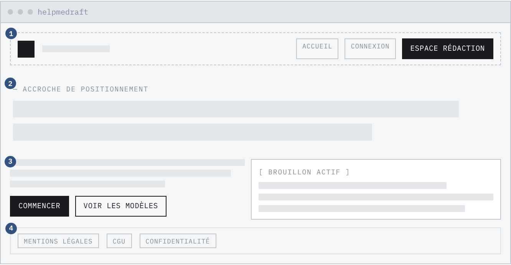
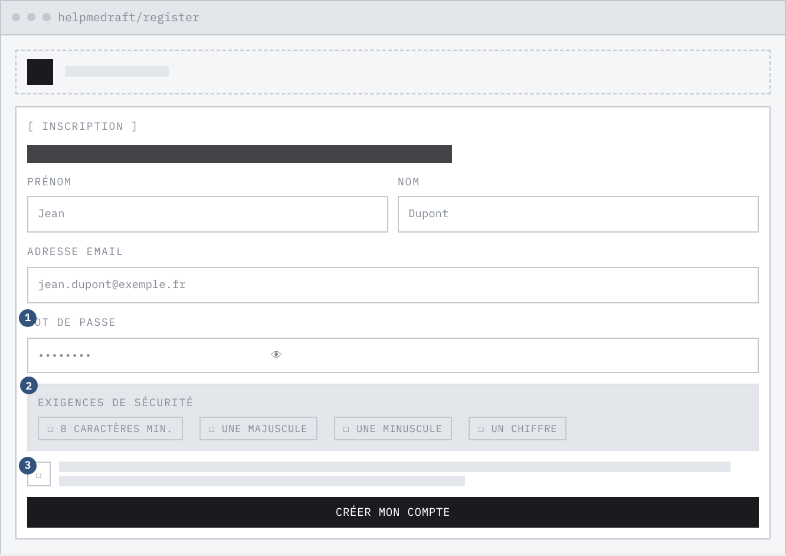
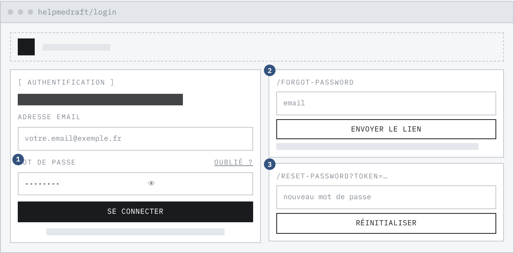
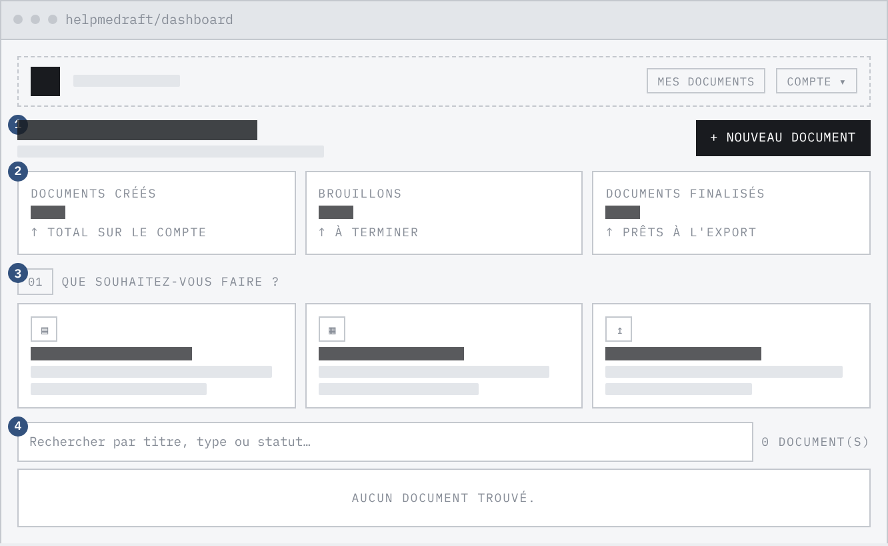
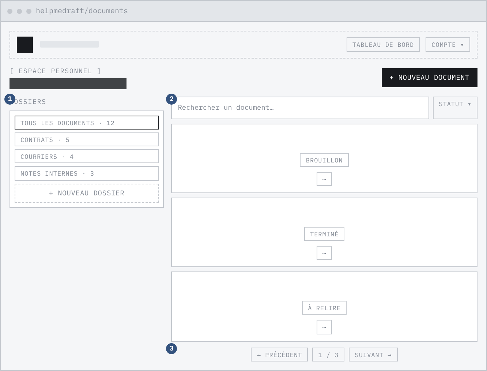
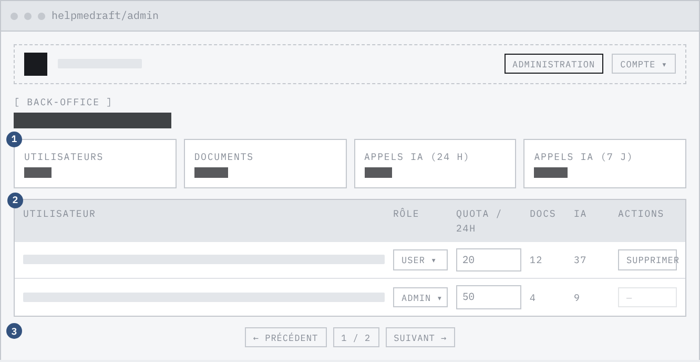
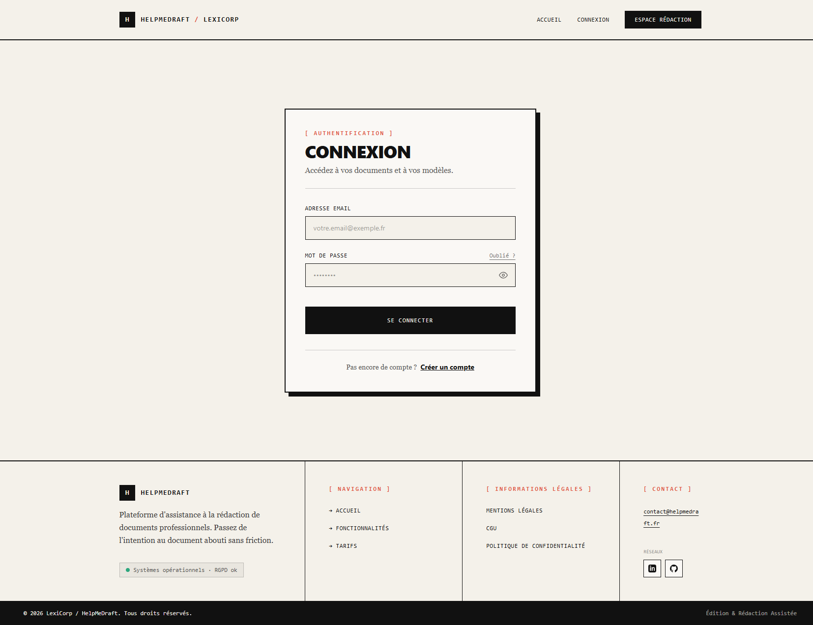
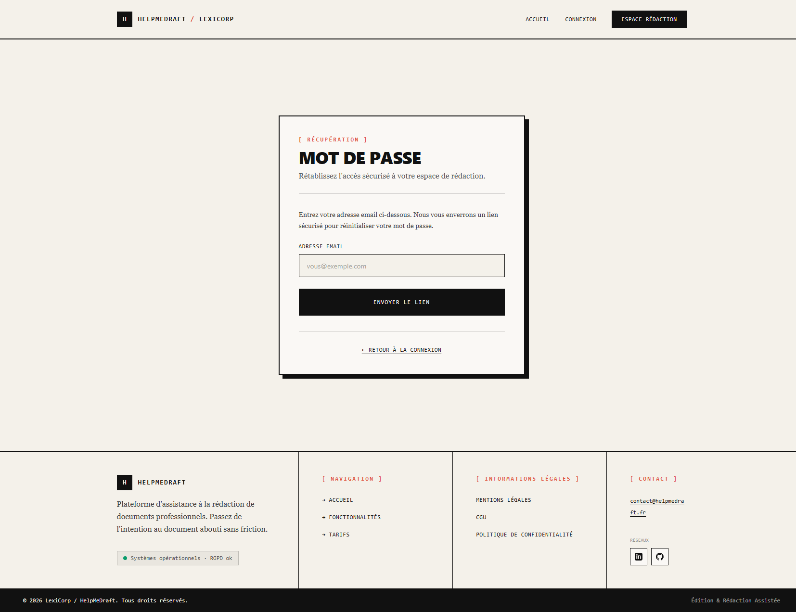
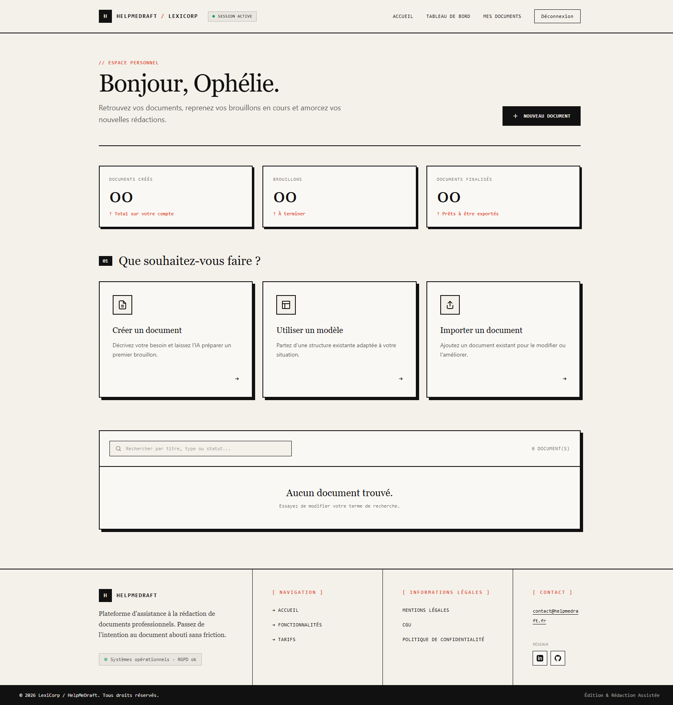
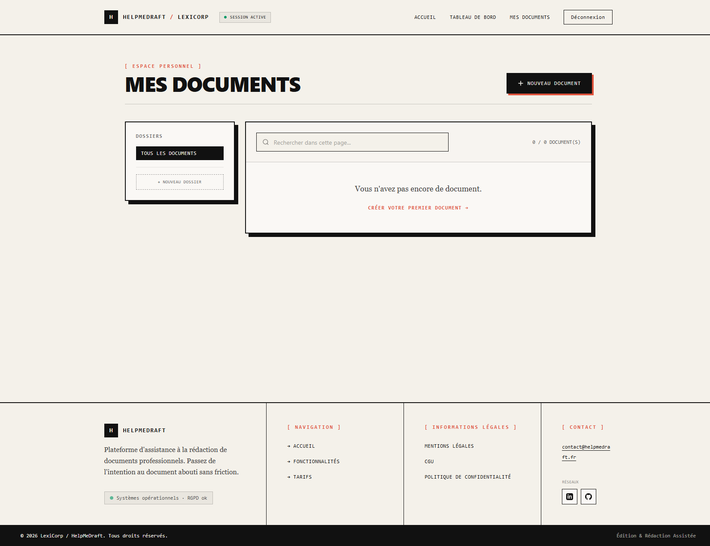
<button type="button" :disabled="iaLoading" @click="handleGenerateIa">
{{ iaLoading ? "Génération en cours…" : "Générer" }}
</button>
<!--
Compteur de génération. L'inférence n'est plus interrompue par un délai
maximum : elle peut durer plus d'une minute sur une machine sans carte
graphique. Sans ce compteur, l'utilisateur n'a aucun moyen de distinguer
une attente normale d'un blocage.
-->
<div v-if="iaLoading" class="space-y-2" role="status">
<div class="h-1 w-full bg-[#111111]/10 overflow-hidden" aria-hidden="true">
<div class="h-full bg-[#C4341C] transition-[width] duration-1000 ease-linear"
:style="{ width: `${iaAvancement * 100}%` }"></div>
</div>
<div class="flex items-center justify-between gap-3">
<p class="font-mono text-[10px] uppercase tracking-wider">{{ iaTexteProgression }}</p>
<button type="button" @click="annulerGenerationIa">Annuler</button>
</div>
</div>
<div v-if="iaResult" class="pt-3 border-t border-[#111111]/20 space-y-3">
<p class="font-mono text-[10px] uppercase tracking-wider">Résultat proposé :</p>
<!-- Le résultat est affiché dans une zone DISTINCTE du document, exigence
« résultat affiché de manière différenciée » du cahier des charges. -->
<div class="p-3 bg-[#FAF8F5] border border-[#111111]/30 text-sm font-serif whitespace-pre-wrap">
{{ iaResult }}
</div>
<!--
Deux actions distinctes, exigées par le cahier des charges : le résultat
doit pouvoir être inséré OU venir remplacer le texte d'origine. Insérer
conserve la source et ajoute la proposition après ; remplacer écrase la
source. Aucune des deux n'est appliquée sans ce clic — la génération ne
touche jamais au document d'elle-même.
-->
<div class="flex flex-wrap gap-3">
<button type="button" @click="appliquerIaResult('inserer')">Insérer</button>
<button type="button" @click="appliquerIaResult('remplacer')">Remplacer</button>
<button type="button" @click="iaResult = null">Annuler</button>
</div>
</div>
def _lire_flux(response) -> tuple[str, int]: """ Reconstitue le texte complet à partir du flux renvoyé par le service. POURQUOI CETTE FONCTION EXISTE En mode flux, le service ne renvoie PAS un objet JSON mais une ligne JSON par jeton généré : {"response":"Bon","done":false} {"response":"jour","done":false} {"response":"","done":true,"prompt_eval_count":30,"eval_count":12} La lecture en une seule fois échoue dessus, et l'échec se produisait APRÈS le bloc de traduction des erreurs : la route renvoyait une erreur interne opaque au lieu d'une erreur de passerelle explicite. Toute génération était cassée. Les compteurs de jetons ne figurent que sur la DERNIÈRE ligne, celle qui porte l'indicateur de fin : c'est elle, et elle seule, qui les donne. """ morceaux: list[str] = [] jetons = 0 for ligne in response.iter_lines(): if not ligne: continue try: bloc = json.loads(ligne) except ValueError as e: raise RuntimeError( "Réponse illisible : le flux ne contient pas du JSON ligne par ligne." ) from e # Une erreur peut arriver EN COURS de flux, après un statut 200 : # la vérification du statut ne la verra jamais. detail = bloc.get("error") if detail: raise RuntimeError(f"Erreur pendant la génération : {detail}") morceaux.append(bloc.get("response", "")) if bloc.get("done"): jetons = bloc.get("prompt_eval_count", 0) + bloc.get("eval_count", 0) return _nettoyer_raisonnement("".join(morceaux)), jetons def _nettoyer_raisonnement(texte: str) -> str: """ Retire le bloc de raisonnement que certains modèles placent devant leur réponse. FILET DE SÉCURITÉ, ET IL A SERVI : sans ce nettoyage, l'application proposait à l'utilisateur d'insérer dans son document plusieurs pages de monologue du modèle. On coupe après le DERNIER marqueur de fin : un modèle peut en émettre plusieurs, et c'est toujours ce qui suit le dernier qui constitue la réponse. """ if "</think>" in texte: return texte.rsplit("</think>", 1)[1].strip() # Bloc ouvert mais jamais refermé : la génération s'est arrêtée au milieu du # raisonnement. Tout ce qu'on a est du raisonnement, il n'y a pas de réponse. if "<think>" in texte: return "" return texte.strip()
ACCESS_TOKEN_EXPIRES_MINUTES = 15 REFRESH_TOKEN_EXPIRES_DAYS = 7 def hash_password(plain_password: str) -> str: # Le sel est tiré au hasard pour CHAQUE mot de passe : deux comptes ayant # le même mot de passe ont deux empreintes différentes, ce qui interdit de # les reconnaître dans un vidage de la base. return bcrypt.hashpw(plain_password.encode("utf-8"), bcrypt.gensalt()).decode("utf-8") def is_password_valid(password: str) -> bool: # Vérifié CÔTÉ SERVEUR : la validation du formulaire sert l'ergonomie, # elle ne protège rien. if len(password) < 8: return False if not re.search(r"[A-Z]", password): return False if not re.search(r"[a-z]", password): return False if not re.search(r"[0-9]", password): return False return True def generate_access_token(user_id: str) -> str: now = datetime.datetime.now(datetime.UTC) payload = { "sub": user_id, "iat": now, "exp": now + datetime.timedelta(minutes=ACCESS_TOKEN_EXPIRES_MINUTES), } return jwt.encode(payload, current_app.config["JWT_SECRET_KEY"], algorithm="HS256") # SÉCURITÉ : le jeton en clair ne quitte jamais le couple serveur → témoin du # client. En base, on ne garde que son empreinte. Conséquence : une fuite de la # table des sessions — vidage, sauvegarde mal protégée — ne permet pas de # rejouer les sessions actives, car l'empreinte n'est pas inversible. # Une empreinte sans sel suffit ici : contrairement à un mot de passe, le jeton # est tiré au hasard sur 64 octets, donc non attaquable par dictionnaire. def generate_refresh_token() -> str: return secrets.token_urlsafe(64) def hash_refresh_token(plain_token: str) -> str: return hashlib.sha256(plain_token.encode()).hexdigest()
class IA(Base): __tablename__ = "ia" __table_args__ = ( # Index composé servant EXACTEMENT la requête du quota : compter les # interactions d'un compte depuis 24 heures. C'est le chemin le plus # sollicité de l'application. Index("ix_ia_user_created", "user_id", "created_at"), # Index servant la relecture de l'historique d'un document. Index("ix_ia_document_created", "id_document", "created_at"), CheckConstraint("type_action IN ('reformuler','corriger','completer')", name="ck_ia_action"), ) id_ia: Mapped[str] = mapped_column(String(36), primary_key=True, default=gen_uuid) type_action: Mapped[str] = mapped_column(String(50), nullable=False) content_before: Mapped[str] = mapped_column(Text, nullable=True) content_after: Mapped[str] = mapped_column(Text, nullable=True) tokens_used: Mapped[int] = mapped_column(Integer, nullable=False, default=0) created_at: Mapped[datetime] = mapped_column(DateTime, nullable=False, default=utc_now_naive) # DEUX clés étrangères, alors que l'auteur du document est déductible par # transitivité. Dénormalisation VOLONTAIRE : le quota et les statistiques # comptent par UTILISATEUR, sans se soucier des documents. Sans ce # rattachement direct, chaque vérification de quota imposerait une jointure. user_id: Mapped[str] = mapped_column( String(36), ForeignKey("user.user_id", ondelete="CASCADE"), nullable=False) id_document: Mapped[str] = mapped_column( String(36), ForeignKey("document.id_document", ondelete="CASCADE"), nullable=False)
@ia_bp.route("/<id_document>/ia/historique", methods=["GET"]) def historique_ia(id_document): with SessionLocal() as db_session: # Propriété du document vérifiée D'ABORD : inutile de chercher # l'historique si le document n'est pas à l'appelant. document = _get_owned_document(db_session, id_document) if document is None: # 404 et non 403 : répondre 403 confirmerait que l'identifiant existe. return jsonify({"error": "Document introuvable"}), 404 # Le filtre sur l'utilisateur est posé À NOUVEAU, bien que la propriété # du document vienne d'être vérifiée : la requête reste correcte même si # la vérification précédente disparaissait d'un refactoring. stmt = ( select(IA) .where(IA.id_document == id_document, IA.user_id == request.user_id) .order_by(IA.created_at.desc()) # antichronologique, sert l'index ) entries = db_session.execute(stmt).scalars().all() return jsonify([ { "id_ia": e.id_ia, "type_action": e.type_action, "content_before": e.content_before, "content_after": e.content_after, "tokens_used": e.tokens_used, "created_at": e.created_at.isoformat(), } for e in entries ]), 200
ALLOWED_TYPE_ACTIONS = {"reformuler", "corriger", "completer"}
ALLOWED_SCOPES = {"selection", "document"}
MAX_INSTRUCTIONS_LENGTH = 500
@ia_bp.before_request
def require_auth():
# Posé sur le plan d'URL entier : une route ajoutée plus tard est protégée
# sans que personne n'ait à y penser.
if request.method == "OPTIONS":
return None
return token_required(lambda: None)()
@ia_bp.route("/<id_document>/ia/generer", methods=["POST"])
def generer_ia(id_document):
data = request.get_json(silent=True) or {}
type_action, scope = data.get("type_action"), data.get("scope")
contenu, instructions = data.get("contenu"), data.get("instructions")
# ---- 1. Validation : listes blanches fermées et bornes de taille --------
if type_action not in ALLOWED_TYPE_ACTIONS:
return jsonify({"error": "type_action doit être l'un de : …"}), 400
if scope not in ALLOWED_SCOPES:
return jsonify({"error": "scope doit être l'un de : …"}), 400
if not contenu or not isinstance(contenu, str) or not contenu.strip():
return jsonify({"error": "Le champ contenu est requis"}), 400
if len(contenu) > _max_contenu():
return jsonify({"error": "Contenu trop long"}), 400
if instructions is not None:
if not isinstance(instructions, str):
return jsonify({"error": "instructions doit être une chaîne"}), 400
if len(instructions) > MAX_INSTRUCTIONS_LENGTH:
return jsonify({"error": "Instructions trop longues"}), 400
with SessionLocal() as db_session:
# ---- 2. Autorisation : le document appartient-il à l'appelant ? -----
document = _get_owned_document(db_session, id_document)
if document is None:
return jsonify({"error": "Document introuvable"}), 404
current_user = db_session.execute(
select(User).where(User.user_id == request.user_id)).scalar_one_or_none()
if current_user is None:
return jsonify({"error": "Utilisateur introuvable"}), 404
# ---- 3. Quota : fenêtre glissante de 24 heures ----------------------
window_start = utc_now_naive() - timedelta(hours=24)
calls_last_24h = db_session.execute(
select(func.count()).select_from(IA).where(
IA.user_id == request.user_id, IA.created_at >= window_start)
).scalar_one()
if calls_last_24h >= current_user.quota_daily_limit:
return jsonify({"error": "Quota IA quotidien atteint."}), 429
# ---- 4. Appel au modèle ---------------------------------------------
prompt = build_prompt(type_action, contenu, instructions)
try:
content_after, tokens_used = call_ollama(
prompt, temperature=temperature_pour(type_action))
except RuntimeError as e:
# Le service métier lève une exception, le contrôleur la TRADUIT en
# réponse HTTP : les services ne connaissent pas les codes de statut.
# Aucune interaction n'est écrite, donc aucun quota n'est consommé.
return jsonify({"error": str(e)}), 502
# ---- 5. Trace, APRÈS le retour du modèle ----------------------------
new_ia = IA(type_action=type_action, content_before=contenu,
content_after=content_after, tokens_used=tokens_used,
user_id=request.user_id, id_document=id_document)
db_session.add(new_ia)
db_session.commit()
db_session.refresh(new_ia)
# La suggestion est RENVOYÉE, jamais écrite dans le document : l'insertion
# est une décision de l'utilisateur, prise côté client.
return jsonify({"id_ia": new_ia.id_ia,
"content_after": content_after,
"tokens_used": tokens_used}), 201
// L'adresse de l'interface était inscrite dans le code. En conteneur, ou dès // qu'on sort du poste de développement, elle change — et une adresse figée // dans le paquet construit ne se corrige qu'en reconstruisant le client. const api = axios.create({ baseURL: import.meta.env.VITE_API_URL ?? "http://localhost:5000/", withCredentials: true, // indispensable pour transmettre le témoin HttpOnly }); // Intercepteur de requête : le jeton d'accès est injecté ICI, une seule fois, // plutôt que recopié dans chaque appel — un oubli serait invisible jusqu'au // premier 401 en production. api.interceptors.request.use((config) => { const authStore = useAuthStore(); if (authStore.accessToken) { config.headers.Authorization = `Bearer ${authStore.accessToken}`; } return config; });
/** * Lance une génération. * * `signal` permet à l'appelant d'abandonner l'attente. Il n'est pas là par * confort : aucun délai ne borne plus l'inférence côté serveur, donc sans moyen * d'annuler, une génération lente laisserait l'utilisateur sans porte de sortie. */ async function generer( idDocument: string, payload: GenererIaPayload, signal?: AbortSignal, ): Promise<GenererIaResponse> { const response = await api.post<GenererIaResponse>( `/documents/${idDocument}/ia/generer`, payload, { signal }, ); return response.data; } async function historique(idDocument: string): Promise<IaHistoriqueEntry[]> { const response = await api.get<IaHistoriqueEntry[]>( `/documents/${idDocument}/ia/historique`, ); return response.data; } export default { generer, historique };